Touche une vidéo pour la regarder.
Les 3 idées qui ont le plus de chances de prendre en ce moment. Un téléphone et un agent motivé suffisent.
Les formats qui reviennent dans les vidéos immo qui font le plus de vues, chiffres à l'appui.
Triées par vues. « X fois plus que d'habitude » : la vidéo a fait X fois plus de vues que les vidéos normales du compte, donc c'est l'idée qui a marché, pas la célébrité du compte. Engagement = j'aime + commentaires, divisés par les vues.
1,8 M vues
en 8 jours
+2 k vues en 24 h
- 96 fois plus que d'habitude
- Engagement 4,6 % (82 k j'aime · 721 commentaires)
- Publiée mardi 17/11 à 17h02
- Durée 36 s
- @lagenceimmo.fr · Instagram · 4 k abonnés
Un employé négocie avec son patron le nombre de likes nécessaires pour fermer l'agence le jour de la sortie de GTA 6.
- Le début (3 premières secondes)
- à l'écran : « On demande à notre patron combien de me like il faut pour fermer l'agence à la sortie de GTA 6 » / dit : « Mathieu ? Oui. J'avais une petite question »
- Comment c'est construit
- Interpellation du patron à son bureau > Négociation du défi lié à GTA 6 > Le patron fixe l'objectif à 25 000 likes > Poignée de main pour valider le pari
- Pourquoi ça marche
- La vidéo surfe sur une tendance pop-culture extrêmement populaire auprès des jeunes tout en incitant directement à liker. Le ton spontané et l'ambiance décontractée au bureau créent une forte sympathie.
À ta sauce : Demander à son patron combien de likes il faut pour offrir le champagne ou un cadeau de bienvenue au prochain acheteur. Il suffit de filmer l'échange au smartphone pour stimuler l'engagement des abonnés.
Script prêt à tourner plus bas : « Le pari des croissants »
Voir la vidéo sur Instagram
870 k vues
en 4 semaines
+50 vues en 24 h
- 76 fois plus que d'habitude
- Engagement 0,0 % (185 j'aime · 11 commentaires)
- Publiée jeudi 29/10 à 16h55
- Durée 54 s
- @safti_france · Instagram · 26 k abonnés
Teaser dynamique et immersif de la convention annuelle du réseau immobilier SAFTI
- Le début (3 premières secondes)
- à l'écran : « The Orange Era - Convention SAFTI 2026 Strasbourg »
- Comment c'est construit
- Arrivée et découverte du lieu > Moments forts sur scène et plénière > Soirée festive et ambiance entre conseillers > Logo final
- Pourquoi ça marche
- Le dynamisme du montage et l'énergie collective créent un fort sentiment d'appartenance. La dimension spectaculaire et festive génère l'envie de rejoindre le réseau.
À ta sauce : Filme les coulisses et l'ambiance d'une vente réussie ou d'une signature chez le notaire avec toute ton équipe. Montre l'énergie humaine et la convivialité de ton agence locale pour attirer de futurs clients.
Script prêt à tourner plus bas : « Coulisses d'une vente VIP »
Voir la vidéo sur Instagram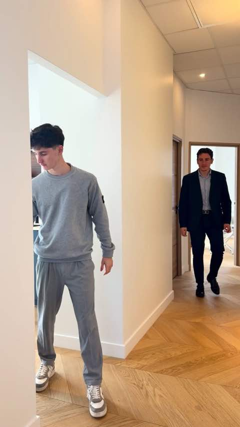
838 k vues
en 9 jours
+19 k vues en 24 h
- 45 fois plus que d'habitude
- Engagement 2,7 % (22 k j'aime · 744 commentaires)
- Publiée lundi 16/11 à 17h49
- Durée 13 s
- @lagenceimmo.fr · Instagram · 4 k abonnés
Un employé se fait convoquer par son patron, mais il choisit de fermer la porte en restant du côté du couloir pour éviter la discussion.
- Le début (3 premières secondes)
- dit : « Maxime ? Ouais ? Faut qu'on parle dans mon bureau. »
- Comment c'est construit
- Le patron convoque Maxime > Maxime le suit jusqu'au bureau > Le patron lui demande de fermer la porte > Maxime ferme la porte en restant à l'extérieur et s'en va
- Pourquoi ça marche
- La vidéo joue sur un ressort d'humour absurde et d'identification autour du stress d'être convoqué par son supérieur. Le comique vient du décalage visuel inattendu quand Maxime ferme la porte en restant dehors.
À ta sauce : Filmer un sketch où l'agent dit au client d'un ton chaleureux de faire comme chez lui, puis le retrouve en pyjama dans le canapé à regarder la télé. Cela se tourne facilement à deux personnes avec un téléphone en alternant deux plans simples.
Script prêt à tourner plus bas : « Le compromis à relire »
Voir la vidéo sur Instagram811 k vues
en 20 jours
+21 k vues en 24 h
- 3,4 fois plus que d'habitude
- Engagement 0,7 % (6 k j'aime · 1 commentaires)
- Publiée jeudi 05/11 à 10h05
- Durée 55 s
- @seloger · TikTok
analyse partielle : une explication claire et face caméra des règles juridiques entourant l'hébergement gratuit d'un proche chez soi quand on est locataire.
- Le début (3 premières secondes)
- à l'écran : « HÉBERGER UN PROCHE CHEZ SOI QUAND ON EST LOCATAIRE : LA RÈGLE À CONNAÎTRE » / dit : « Est-ce que votre propriétaire a le droit de vous interdire d'héberger un proche chez vous ? »
- Comment c'est construit
- Accroche sur les droits du locataire > Distinction entre hébergement gratuit et sous-location > Explication de la loi > Conseils pratiques > Appel à l'action
- Pourquoi ça marche
- La vidéo répond à une idée reçue très répandue et lève un doute légal fréquent chez de nombreux locataires. Son format pédagogique et direct suscite immédiatement la curiosité et les partages.
À ta sauce : Pierre peut se filmer face caméra pour expliquer si un propriétaire a le droit d'interdire les animaux de compagnie dans une location. Il résume la règle de loi en 30 secondes et invite les abonnés à poser leurs questions en commentaire.
Script prêt à tourner plus bas : « Peindre ses murs quand on est locataire »
Voir la vidéo sur TikTok
463 k vues
en 3 mois
+217 vues en 24 h
- 87 fois plus que d'habitude
- Engagement 0,1 % (290 j'aime · 46 commentaires)
- Publiée samedi 05/09 à 13h03
- Durée 5 s
- @geoffrey.delvaux · Instagram · 6 k abonnés
Une démonstration humoristique d'un détail gênant du quotidien qu'on oublie souvent de vérifier avant d'acheter un bien immobilier.
- Le début (3 premières secondes)
- à l'écran : « LES DÉTAILS QUE TU REGRETTES APRÈS AVOIR SIGNÉ CHEZ LE NOTAIRE... (Et que personne ne pense à vérifier) »
- Comment c'est construit
- Ouverture de la porte d'entrée > Découverte du blocage de la porte à cause de l'espace réduit > Tentative de se faufiler difficilement dans l'entrée
- Pourquoi ça marche
- La scène suscite une identification immédiate et de l'amusement face à une situation absurde du quotidien. La brièveté de la vidéo incite fortement le spectateur à lire la légende pour avoir la liste complète des conseils.
À ta sauce : Se filmer en train de chercher désespérément du réseau mobile dans chaque coin d'une pièce avec son téléphone en l'air. Compléter la vidéo avec une légende listant les vérifications invisibles à faire avant d'acheter.
Script prêt à tourner plus bas : « Le réseau introuvable »
Voir la vidéo sur Instagram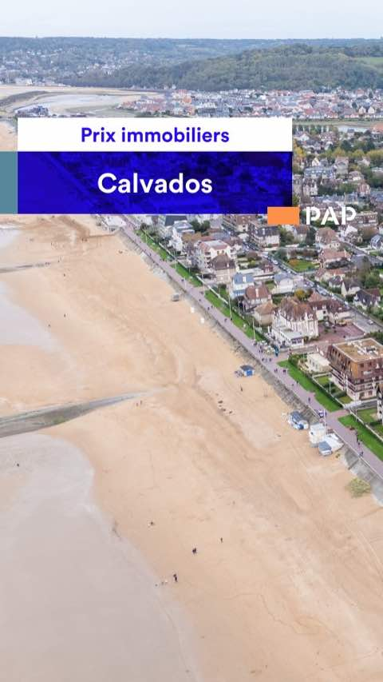
443 k vues
en 15 jours
+2 k vues en 24 h
- 9,6 fois plus que d'habitude
- Engagement 0,2 % (907 j'aime · 54 commentaires)
- Publiée mardi 10/11 à 11h57
- Durée 11 s
- @pap.fr · Instagram · 106 k abonnés
Un tableau synthétique affichant le prix au m² et l'évolution annuelle dans les différentes villes du Calvados.
- Le début (3 premières secondes)
- à l'écran : « Prix immobiliers Calvados »
- Comment c'est construit
- Affichage du tableau comparatif des prix du Calvados > Défilement de paysages locaux en arrière-plan > Maintien du tableau jusqu'à la fin de la vidéo
- Pourquoi ça marche
- Les chiffres locaux captent immédiatement l'attention des habitants curieux de connaître la valeur de leur marché. Le format épuré incite à la sauvegarde et à la lecture de la légende.
À ta sauce : Filmer une belle rue de son secteur en plan fixe et superposer un tableau des prix au m² de son secteur. Ajouter une voix off courte expliquant quelle ville voisine a le plus augmenté.
Script prêt à tourner plus bas : « Combien de m² pour 200 000 € dans le 44 ? »
Voir la vidéo sur Instagram375 k vues
en 13 jours
+10 k vues en 24 h
- 1,6 fois plus que d'habitude
- Engagement 0,1 % (511 j'aime · 1 commentaires)
- Publiée jeudi 12/11 à 16h22
- Durée 5 s
- @seloger · TikTok
Une femme reste totalement indifférente quand on essaie de lui voler son sac car elle est trop absorbée par sa recherche sur SeLoger.
- Le début (3 premières secondes)
- à l'écran : « ON ME VOLE MON SAC, MAIS JE SUIS EN TRAIN DE SCROLLER SUR SELOGER »
- Comment c'est construit
- Une femme marche dans la rue en regardant son téléphone > Une main attrape la lanière de son sac pour lui voler > Elle tourne à peine la tête et continue de marcher sans s'arrêter
- Pourquoi ça marche
- L'absurdité de la situation et la réaction disproportionnée créent un effet comique fort. La durée très courte favorise les vues répétées en boucle.
À ta sauce : Pierre peut se filmer en train de renverser son café ou louper son bus sans s'en préoccuper car il vient de trouver le bien parfait pour un client. C'est un moyen simple et humoristique de montrer sa dévotion à son travail.
Script prêt à tourner plus bas : « Inondation de café au bistrot »
Voir la vidéo sur TikTok368 k vues
en 19 jours
+6 k vues en 24 h
- 8,0 fois plus que d'habitude
- Engagement 0,0 % (113 j'aime · 20 commentaires)
- Publiée vendredi 06/11 à 16h46
- Durée 46 s
- @pap.fr · Instagram · 106 k abonnés
Explication des trois cas légaux permettant à un locataire de refuser une augmentation de loyer.
- Le début (3 premières secondes)
- à l'écran : « Mon PROPRIO augmente mon LOYER de 100 euros 😟 » / dit : « Ton propriétaire veut augmenter ton loyer ? Et bien voici les 3 cas où tu peux refuser tout simplement ! »
- Comment c'est construit
- Accroche sur la hausse du loyer > Cas 1 sans clause d'indexation > Cas 2 passoire thermique F ou G > Cas 3 augmentation plafonnée par l'IRL > Appel au partage et commentaires
- Pourquoi ça marche
- Elle répond directement à une crainte financière forte des locataires en proposant des solutions concrètes et juridiques. Le ton dynamique et le chiffre précis donnent immédiatement envie de partager l'astuce.
À ta sauce : Tourne une vidéo face caméra expliquant 3 astuces très simples pour récupérer 100% de son dépôt de garantie lors de l'état des lieux. Donne des exemples concrets de petites réparations à faire soi-même avant de rendre les clés.
Voir la vidéo sur Instagram351 k vues
en 2 mois
+20 vues en 24 h
- Engagement 0,0 % (32 j'aime · 2 commentaires)
- Publiée mardi 22/09 à 11h31
- Durée 10 s
- @seloger · Instagram · 147 k abonnés
Suivre pas à pas les différentes étapes de la journée où l'on devient enfin propriétaire.
- Le début (3 premières secondes)
- à l'écran : « MA JOURNÉE D'ACHAT IMMOBILIER »
- Comment c'est construit
- Arrivée et dernière visite de vérification > Relevé du compteur électrique > Signature chez le notaire > Célébration lors de la remise des clés
- Pourquoi ça marche
- Ce format mini vlog suscite une forte projection et l'identification des personnes qui rêvent d'acheter. La progression heure par heure crée un sentiment d'aboutissement très satisfaisant lors de la remise des clés.
À ta sauce : Pierre peut filmer sa propre journée sous le titre Ma journée d'accompagnement de signature avec les étapes clés jusqu au notaire. Cela met en valeur l'aide concrète et bienveillante apportée par l'agent immobilier du début à la fin.
Voir la vidéo sur Instagram
333 k vues
en 3 mois
+243 vues en 24 h
- 63 fois plus que d'habitude
- Engagement 0,5 % (1 k j'aime · 377 commentaires)
- Publiée jeudi 03/09 à 21h53
- Durée 6 s
- @geoffrey.delvaux · Instagram · 6 k abonnés
Une belle visite visuelle courte avec un titre intrigant qui renvoie vers les conseils complets dans la légende.
- Le début (3 premières secondes)
- à l'écran : « 7 ERREURS QUE JE NE FERAIS JAMAIS EN VISITANT UNE MAISON »
- Comment c'est construit
- Entrée dans la pièce avec le titre principal > Avancée vers le fond avec le sous-titre > Fin sur la vue d'ensemble du séjour
- Pourquoi ça marche
- Elle joue sur la peur de commettre une erreur coûteuse lors d'un achat immobilier. La brièveté de la vidéo force le spectateur à la rejouer plusieurs fois pendant qu'il lit la légende, ce qui fait exploser l'algorithme.
À ta sauce : Pierre avance dans une belle cuisine et affiche le texte 3 pièges à éviter absolument avant d'acheter. Il renvoie directement vers la légende où il détaille les points de contrôle techniques indispensables.
Script prêt à tourner plus bas : « Les 5 erreurs en visite »
Voir la vidéo sur Instagram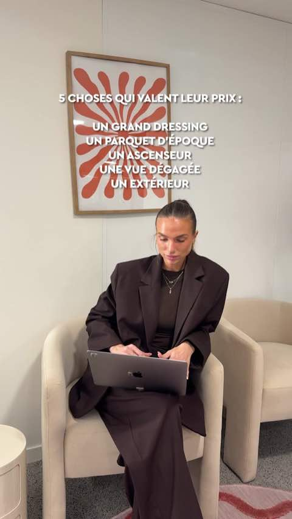
316 k vues
en 3 semaines
- Engagement 0,2 % (550 j'aime · 0 commentaires)
- Publiée lundi 02/11 à 14h48
- Durée 7 s
- @seloger · TikTok
Une comédienne liste 5 critères immobiliers qui justifient leur prix tout en feignant de chercher sur son ordinateur.
- Le début (3 premières secondes)
- à l'écran : « 5 CHOSES QUI VALENT LEUR PRIX : »
- Comment c'est construit
- Affichage de la liste des 5 critères à l'écran > La comédienne réfléchit et tape sur son ordinateur > Fin du plan fixe en rythme sur la musique
- Pourquoi ça marche
- Le sujet suscite immédiatement l'identification des personnes en recherche immobilière. La faible durée de la vidéo permet un taux de visionnage complet très élevé.
À ta sauce : Pierre peut se filmer à son bureau en train de taper sur son ordinateur avec un texte superposé listant les 5 critères indispensables pour acheter dans son quartier. C'est un format express à tourner seul avec son smartphone.
Voir la vidéo sur TikTok
276 k vues
- 8,3 fois plus que d'habitude
- Engagement 0,4 % (513 j'aime · 553 commentaires)
- Durée 6 s
- @emelinesiron · Instagram · 87 k abonnés
Une annonce informative sur la nouvelle réglementation Airbnb interdisant d'imposer des corvées aux voyageurs, présentée par du texte affiché sur une vidéo de visite de salle de bain.
- Le début (3 premières secondes)
- à l'écran : « Dès le 20 novembre : Airbnb interdit aux proprio d'imposer certaines corvées aux voyageurs ! ❌ »
- Comment c'est construit
- Accroche sur la nouvelle règle Airbnb > Énumération des tâches désormais interdites > Teasing final incitant à lire la légende
- Pourquoi ça marche
- Cette information juridique choc suscite une forte réaction immédiate chez les hôtes et les voyageurs Airbnb. La brièveté du texte force l'utilisateur à enregistrer le post et lire la légende complète.
À ta sauce : Filmer un joli coin d'appartement avec un texte présentant 3 clauses abusives fréquemment vues dans les baux de location. Rediriger vers la légende pour expliquer les recours légaux des locataires.
Script prêt à tourner plus bas : « Ce qui change au 1er janvier »
Voir la vidéo sur Instagram274 k vues
en 4 semaines
+587 vues en 24 h
- 14 fois plus que d'habitude
- Engagement 1,1 % (3 k j'aime · 42 commentaires)
- Publiée mercredi 28/10 à 18h00
- Durée 28 s
- @sandra.viricel.immobilier · Instagram · 15 k abonnés
Visite immersive et élégante d'un appartement d'exception situé face au Parc de la Tête d'Or à Lyon.
- Le début (3 premières secondes)
- à l'écran : « LYON 6 Appartement - 137m2 - 4 pièces »
- Comment c'est construit
- Façade extérieure et environnement > Entrée de l'immeuble > Découverte du salon et du charme ancien > Vue sur les arbres depuis le balcon et logo
- Pourquoi ça marche
- L'emplacement très prisé face au parc déclenche immédiatement un désir d'appartenance. Les beaux volumes et le cachet de l'ancien captivent les acheteurs à la recherche de biens de standing.
À ta sauce : Commencer une visite vidéo directement par un plan traversant depuis le balcon vers l'extérieur pour saisir la meilleure vue du bien dès la première seconde. Poursuivre avec une traversée fluide des pièces de vie en montrant un détail architectural marquant.
Script prêt à tourner plus bas : « La vue d'abord »
Voir la vidéo sur Instagram
271 k vues
- 5,9 fois plus que d'habitude
- Engagement 0,0 % (83 j'aime · 17 commentaires)
- Durée 12 s
- @pap.fr · Instagram · 106 k abonnés
Un tableau récapitulatif des prix au mètre carré et de leurs variations annuelles dans 15 villes de Guadeloupe.
- Le début (3 premières secondes)
- à l'écran : « Prix immobiliers Guadeloupe »
- Comment c'est construit
- Titre affiché 'Prix immobiliers Guadeloupe' > Liste comparative des 15 villes > Fin de la vidéo en boucle sur le tableau
- Pourquoi ça marche
- Les données chiffrées locales suscitent la curiosité et l'intérêt des résidents. Le format synthétique pousse à enregistrer ou partager la vidéo pour garder les chiffres en mémoire.
À ta sauce : Pierre peut afficher un tableau des prix par quartier de sa ville à l'écran et commenter brièvement la plus forte hausse en voix off. Cela se réalise très rapidement avec un téléphone et une application de montage gratuite.
Voir la vidéo sur Instagram
256 k vues
en 3 mois
- 6,5 fois plus que d'habitude
- Engagement 0,0 % (0 commentaires)
- Publiée jeudi 27/08 à 16h01
- Durée 51 s
- @bienici · Instagram · 36 k abonnés
Micro-trottoir questionnant les passants sur leur exposition idéale au soleil pour promouvoir une fonctionnalité de l'application.
- Le début (3 premières secondes)
- à l'écran : « Moi j'aime bien dormir le matin ! » / dit : « Moi j'aime bien dormir le matin ! »
- Comment c'est construit
- Sondage des passants sur l'exposition matin ou après-midi > Enchaînement des avis contrastés > Présentation de la recherche par temps de trajet sur l'application > Réactions enthousiastes et écran de fin avec logo
- Pourquoi ça marche
- Le sujet crée un débat du quotidien très accessible qui incite les spectateurs à donner leur propre avis en commentaire. La promotion du service s'intègre ensuite naturellement grâce aux réactions authentiques des passants.
À ta sauce : Demander aux habitants de votre ville dans la rue s'ils préfèrent un grand balcon ou un grand salon. Conclure la vidéo en présentant un appartement à vendre dans l'agence qui propose justement les deux.
Script prêt à tourner plus bas : « Balcon ou pièce en plus ? »
Voir la vidéo sur Instagram
252 k vues
en 13 jours
+2 k vues en 24 h
- 9,5 fois plus que d'habitude
- Engagement 0,6 % (2 k j'aime · 29 commentaires)
- Publiée jeudi 12/11 à 18h30
- Durée 9 s
- @emelinesiron · Instagram · 87 k abonnés
Une liste récapitulative de 10 sites internet publics gratuits et méconnus pour faire des économies ou récupérer de l'argent.
- Le début (3 premières secondes)
- à l'écran : « L'État a créé 10 sites gratuits qui peuvent te faire gagner des milliers d'euros »
- Comment c'est construit
- Titre d'accroche avec promesse de gain financier > Affichage d'une liste synthétique de 10 services publics > Plan fixe incitant à la lecture et à la sauvegarde
- Pourquoi ça marche
- La promesse de gagner de l'argent gratuitement suscite une forte curiosité immédiate. Le format sous forme de liste dense incite massivement à enregistrer le Reels pour le consulter plus tard.
À ta sauce : Pierre peut se filmer de profil face à une liste affichant 5 outils en ligne indispensables avant d'acheter un bien immobilier localement (DVF, Géorisques, Cadastre, etc.). Il invite ensuite les abonnés à enregistrer la vidéo et à lire la légende pour comprendre comment utiliser chaque outil.
Voir la vidéo sur Instagram242 k vues
en 3 semaines
+1 vues en 24 h
- 6,1 fois plus que d'habitude
- Engagement 0,0 % (4 commentaires)
- Publiée lundi 02/11 à 16h01
- Durée 49 s
- @bienici · Instagram · 36 k abonnés
Un guide pratique des droits et interdictions de travaux quand on est locataire pour ne pas perdre sa caution.
- Le début (3 premières secondes)
- à l'écran : « Vous voulez enfin vous sentir chez vous ? » / dit : « Vous voulez enfin vous sentir chez vous ? Attention, aménager oui, mais transformer exige de respecter certaines règles. »
- Comment c'est construit
- Accroche sur les règles d'aménagement en location > Présentation de 3 modifications autorisées > Avertissement sur les gros travaux soumis à autorisation > Appel à l'action vers la plateforme
- Pourquoi ça marche
- Elle répond directement à la peur très répandue de perdre sa caution lors d'un déménagement. Le format en liste donne des conseils juridiques clairs, rassurants et faciles à retenir.
À ta sauce : Se filmer dans un appartement de l'agence en montrant 3 astuces pour personnaliser son intérieur sans faire de trous ni abîmer les murs. L'agent présente des solutions concrètes comme les crochets adhésifs ou les cadres posés sur des meubles.
Voir la vidéo sur Instagram235 k vues
en 2 mois
+38 vues en 24 h
- 6,6 fois plus que d'habitude
- Engagement 1,2 % (3 k j'aime · 77 commentaires)
- Publiée vendredi 18/09 à 16h37
- Durée 115 s
- @sandra_viricel · Instagram · 116 k abonnés
Une experte de l'immobilier alerte le public sur une arnaque émergente aux faux prêts bancaires ciblant les acheteurs.
- Le début (3 premières secondes)
- dit : « Les amis aujourd'hui je prends la parole et c'est assez rare que je le fasse »
- Comment c'est construit
- Mise en garde et constat de l'arnaque > Explication du mode opératoire des escrocs > Conseils de précaution à vérifier > Appel à la prudence et au partage
- Pourquoi ça marche
- La vidéo joue sur la peur de perdre son apport financier dans un projet de vie, ce qui incite fortement au partage. La notoriété et le ton sérieux de l'intervenante apportent une crédibilité immédiate.
À ta sauce : Tourne une vidéo face caméra pour mettre en garde les acheteurs locaux contre les fausses annonces de location ou de vente. Donne deux réflexes simples pour vérifier l'identité de l'agent avant tout versement.
Script prêt à tourner plus bas : « L'arnaque au virement avant visite »
Voir la vidéo sur Instagram234 k vues
en 10 jours
+1 k vues en 24 h
- 5,1 fois plus que d'habitude
- Engagement 0,0 % (20 j'aime · 0 commentaires)
- Publiée dimanche 15/11 à 15h30
- Durée 14 s
- @pap.fr · Instagram · 106 k abonnés
Un récapitulatif visuel des prix au mètre carré et de leur évolution annuelle dans plusieurs villes des Ardennes.
- Le début (3 premières secondes)
- à l'écran : « Prix immobiliers Ardennes »
- Comment c'est construit
- Présentation du titre du département > Affichage du tableau comparatif des prix et évolutions par ville > Défilement du paysage de fond avec la musique
- Pourquoi ça marche
- Les chiffres locaux précis stimulent immédiatement la curiosité des habitants qui veulent évaluer leur propre patrimoine. Le format synthétique pousse à enregistrer ou partager la vidéo aux personnes de la région.
À ta sauce : Créer un visuel similaire pour sa propre ville en affichant le prix moyen par quartier ou par commune voisine. Il suffit de se filmer en train de pointer les chiffres ajoutés au montage.
Script prêt à tourner plus bas : « Taxe foncière : le comparatif local »
Voir la vidéo sur Instagram
228 k vues
en 7 jours
+571 vues en 24 h
- 12 fois plus que d'habitude
- Engagement 4,1 % (9 k j'aime · 98 commentaires)
- Publiée mercredi 18/11 à 10h49
- Durée 35 s
- @lagenceimmo.fr · Instagram · 5 k abonnés
Le patron d'une agence honore un pari fait avec sa communauté et accorde une journée de congé à son équipe.
- Le début (3 premières secondes)
- à l'écran : « Donc l'agence fermera bien ce jeudi pour que je puisse jouer à GTA 6 Merci Matteo » / dit : « Bah alors Matteo, plus de 47 000 likes sur la dernière vidéo, je pense que je vais pouvoir jouer à GTA 6 »
- Comment c'est construit
- Annonce du respect du défi de likes > Coulisses de la décision du patron > Nouveau sous-défi imposé à l'employé > Accord final et souhait de bon congé
- Pourquoi ça marche
- Elle crée un fort sentiment de communauté en montrant que l'agence tient ses promesses faites aux abonnés. La complicité patron-employé et la référence à la culture pop apportent une touche très humaine.
À ta sauce : Pierre peut lancer un pari simple avec son audience comme faire visiter un bien en tenue originale s'il atteint mille likes. Il tournera ensuite la suite seul face caméra pour remercier sa communauté tout en créant du divertissement.
Script prêt à tourner plus bas : « Le pari du patron tenu »
Voir la vidéo sur Instagram
224 k vues
en 4 semaines
+1 vues en 24 h
- 5,7 fois plus que d'habitude
- Engagement 0,0 % (2 commentaires)
- Publiée mercredi 28/10 à 17h16
- Durée 56 s
- @bienici · Instagram · 36 k abonnés
Une présentatrice donne 3 conseils pratiques dans la rue pour aider les candidats locataires à décrocher une visite d'appartement.
- Le début (3 premières secondes)
- à l'écran : « MARRE » / dit : « Si tu en as marre d'envoyer des messages pour un appartement et de ne pas avoir de réponse, cette vidéo est faite pour toi. »
- Comment c'est construit
- Accroche sur la frustration des recherches d'appartement > Conseil 1 : envoyer un dossier complet > Conseil 2 : être ultra réactif > Conseil 3 : instaurer un échange de confiance > Appel à l'action pour télécharger l'application
- Pourquoi ça marche
- Elle s'adresse directement à une frustration très répandue chez les chercheurs de logement pour capter immédiatement l'attention. Les conseils sont simples, concrets et valorisent le rôle de l'agent immobilier.
À ta sauce : L'agent se filme micro à la main dans le centre-ville de sa commune pour donner les 3 erreurs qui font éliminer un dossier de location localement. C'est simple à tourner en marchant avec un smartphone et un micro cravate.
Voir la vidéo sur Instagram
166 k vues
en 12 jours
+388 vues en 24 h
- 6,3 fois plus que d'habitude
- Engagement 0,2 % (236 j'aime · 22 commentaires)
- Publiée vendredi 13/11 à 18h30
- Durée 7 s
- @emelinesiron · Instagram · 87 k abonnés
Un tableau synthétique qui montre la capacité d'emprunt bancaire selon son salaire mensuel.
- Le début (3 premières secondes)
- à l'écran : « Avec ton seul salaire, la banque te prête combien ? »
- Comment c'est construit
- Question d'accroche en haut > Tableau comparatif montrant salaire net et capacité d'emprunt > Émoticône pointant sur une tranche de salaire spécifique
- Pourquoi ça marche
- La curiosité immédiate pousse le spectateur à chercher son propre salaire dans la liste pour connaître son pouvoir d'achat. Le format très lisible incite à sauvegarder la vidéo et à lire la légende.
À ta sauce : Pierre peut réaliser une image similaire adaptée à sa ville en montrant quelle surface de logement on peut acheter selon son salaire net mensuel. Il lui suffit de filmer une belle rue de son quartier en arrière-plan et d'ajouter le texte par-dessus.
Voir la vidéo sur Instagram162 k vues
en 3 mois
+11 vues en 24 h
- 30 fois plus que d'habitude
- Engagement 0,0 % (1 commentaires)
- Publiée jeudi 03/09 à 21h41
- Durée 6 s
- @geoffrey.delvaux · Instagram · 6 k abonnés
Un agent liste les objets du quotidien qui encombrement inutilement un logement et freinent les acheteurs.
- Le début (3 premières secondes)
- à l'écran : « 8 OBJETS QUI ENCOMBRENT UNE MAISON... ALORS QUE LES GENS PENSENT EN AVOIR "BESOIN" »
- Comment c'est construit
- Plan panoramique dans un salon décoré > Transition rapide vers l'agent > Posage de l'agent tout sourire invitant à lire la légende
- Pourquoi ça marche
- Le titre crée une forte curiosité en remettant en question des habitudes du quotidien. La brièveté de la vidéo force le spectateur à lire la description complète pour avoir la liste.
À ta sauce : Se filmer en marchant dans une pièce puis pointer 3 détails qui gâchent les photos immobilières. Renvoyer vers la légende pour détailler comment désencombrer efficacement avant une vente.
Voir la vidéo sur Instagram
162 k vues
en 3 mois
+9 vues en 24 h
- 30 fois plus que d'habitude
- Engagement 0,1 % (201 j'aime · 4 commentaires)
- Publiée dimanche 30/08 à 22h24
- Durée 5 s
- @geoffrey.delvaux · Instagram · 6 k abonnés
Présentation des petits détails invisibles lors d'une visite qu'on regrette d'avoir ignorés après l'achat.
- Le début (3 premières secondes)
- à l'écran : « LES DÉTAILS QU'ON REGRETTE APRÈS AVOIR SIGNÉ CHEZ LE NOTAIRE... »
- Comment c'est construit
- Entrée du présentateur dans une pièce avec le texte d'accroche > Vérification d'un placard mural > Sortie du cadre pour inciter à lire la légende
- Pourquoi ça marche
- L'accroche active la peur de commettre une erreur irréversible lors d'un achat immobilier. La vidéo très courte incitant à lire la description augmente le temps de visionnage global.
À ta sauce : Pierre peut se filmer en train de tester le débit d'un robinet ou une prise électrique pendant une visite. Il ajoute un texte percutant sur les pièges à éviter et liste ses 5 conseils dans la description.
Script prêt à tourner plus bas : « Le piège de la pression d'eau en visite »
Voir la vidéo sur Instagram148 k vues
en 20 jours
+9 k vues en 24 h
- 3,2 fois plus que d'habitude
- Engagement 0,0 % (17 j'aime · 1 commentaires)
- Publiée jeudi 05/11 à 16h12
- Durée 15 s
- @pap.fr · Instagram · 106 k abonnés
Un tableau synthétique affichant les prix au m2 et leur évolution annuelle dans plusieurs villes du département de l'Yonne.
- Le début (3 premières secondes)
- à l'écran : « Prix immobiliers Yonne »
- Comment c'est construit
- Affichage direct du tableau comparatif des villes de l'Yonne > Défilé visuel des chiffres de prix et de hausse ou baisse > Maintien du tableau en boucle sur fond de paysage local
- Pourquoi ça marche
- Les données locales très précises éveillent immédiatement la curiosité des habitants qui cherchent leur ville. Le format chiffré et clair incite au partage et à la sauvegarde.
À ta sauce : Concevoir un tableau synthétique des prix au m2 dans son quartier ou son secteur sur un fond vidéo du centre-ville. Pierre peut commenter à la voix off la ville la plus abordable ou la plus chère.
Script prêt à tourner plus bas : « 200 000 € : quelle surface autour de Nantes ? »
Voir la vidéo sur Instagram
111 k vues
- 7,5 fois plus que d'habitude
- Engagement 1,2 % (1 k j'aime · 18 commentaires)
- Durée 11 s
- @lagenceimmo.fr · Instagram · 4 k abonnés
Deux collègues d'une agence prennent conscience avec panique et humour que la caméra de sécurité a enregistré tous leurs potins.
- Le début (3 premières secondes)
- à l'écran : « Quand toi et ton collègue préféré venez d’apprendre que les caméras au boulot enregistrent aussi le son... »
- Comment c'est construit
- Attitude pensive des deux agents > Plan rapide sur la caméra murale > Prise de conscience embarrassée des agents > Fuite précipitée hors de la pièce
- Pourquoi ça marche
- Cette vidéo mise sur un ressort d'identification fort à une situation de bureau universelle et comique. Les expressions faciales très expressives incitent fortement les abonnés à identifier leurs propres collègues en commentaire.
À ta sauce : Pierre peut se filmer seul en train de réaliser qu'il a laissé son micro ouvert à la fin d'une visio avec un client après avoir dit une petite bêtise. Il mime la panique en coupant précipitamment son ordinateur avec une réaction très visuelle.
Voir la vidéo sur Instagram
111 k vues
en 11 jours
+803 vues en 24 h
- 5,8 fois plus que d'habitude
- Engagement 0,9 % (1 k j'aime · 25 commentaires)
- Publiée vendredi 13/11 à 18h35
- Durée 56 s
- @sandra.viricel.immobilier · Instagram · 15 k abonnés
Présentation dynamique d'une maison contemporaine avec piscine et vue panoramique incarnée par l'agente immobilière.
- Le début (3 premières secondes)
- à l'écran : « LENTILLY Maison - 151m2 - 6 pièces » / dit : « Aujourd'hui on est à Lentilly pour vous montrer une maison contemporaine »
- Comment c'est construit
- Intro face caméra sur la terrasse > Découverte rythmée de la piscine et des extérieurs > Relance de l'agente qui insiste sur la vue > Aperçu des espaces de vie intérieurs lumineux > Final sur le panorama au coucher du soleil et logo agence
- Pourquoi ça marche
- L'incarnation humaine au début crée un lien de confiance immédiat. Le cadre idyllique avec la piscine et la vue panoramique suscite un fort désir d'évasion et de projection.
À ta sauce : Commence ta vidéo en face caméra sur le spot le plus spectaculaire du bien pour interpeller le spectateur. Enchaîne ensuite avec de courtes séquences immersives des meilleures pièces rythmées par une musique moderne.
Voir la vidéo sur Instagram105 k vues
en 9 jours
+31 vues en 24 h
- 2,7 fois plus que d'habitude
- Engagement 0,0 % (13 j'aime · 0 commentaires)
- Publiée lundi 16/11 à 17h01
- Durée 59 s
- @bienici · Instagram · 36 k abonnés
Une présentatrice face caméra énumère 4 erreurs courantes à éviter et donne des astuces pratiques pour réduire sa facture de chauffage.
- Le début (3 premières secondes)
- à l'écran : « Si ta facture de chauffage explode chaque hiver » / dit : « Si votre facture de chauffage explose chaque hiver, il y a de grandes chances que vous fassiez au moins une de ces erreurs. »
- Comment c'est construit
- Accroche sur la facture de chauffage > Énumération des 4 erreurs courantes > Bonus astuces de grand-mère > Appel à l'action vers l'application
- Pourquoi ça marche
- Le sujet des factures de chauffage touche le portefeuille de tout le monde en hiver, ce qui crée une forte identification. L'énumération claire apporte des conseils pratiques immédiatement applicables.
À ta sauce : Filmez-vous en face caméra dans un appartement pour montrer 3 astuces simples d'isolation avant d'acheter ou de louer. Proposez aux spectateurs d'enregistrer la vidéo pour leur prochaine visite immobilière.
Voir la vidéo sur Instagram101 k vues
en 3 semaines
+62 vues en 24 h
- 3,8 fois plus que d'habitude
- Engagement 0,2 % (191 j'aime · 41 commentaires)
- Publiée mercredi 04/11 à 18h00
- Durée 5 s
- @emelinesiron · Instagram · 87 k abonnés
Calculer le cumul des petites dépenses quotidiennes sur 10 ans pour créer un déclic financier chez le spectateur.
- Le début (3 premières secondes)
- à l'écran : « CES MONTANTS VONT TE CHOQUER : »
- Comment c'est construit
- Affichage de la liste des petites dépenses mensuelles > Calcul du total mensuel et annuel > Dévoilement de la somme totale sur 10 ans
- Pourquoi ça marche
- Les dépenses citées parlent à tout le monde et provoquent une forte identification. L'accumulation des chiffres sur 10 ans crée un effet de choc immédiat et valorise la capacité d'épargne cachée.
À ta sauce : Pierre peut se filmer en train de marcher en agence en affichant à l'écran la somme totale versée en loyer à perte sur 10 ans. Il conclut en montrant qu'avec ce même montant, son client aurait déjà payé la moitié de son appartement.
Voir la vidéo sur Instagram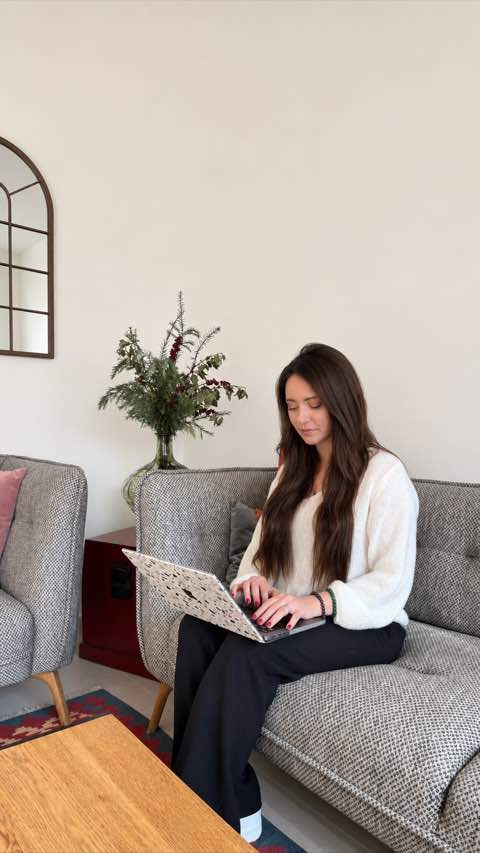
92 k vues
en 10 jours
+286 vues en 24 h
- 3,5 fois plus que d'habitude
- Engagement 0,3 % (258 j'aime · 23 commentaires)
- Publiée dimanche 15/11 à 18h30
- Durée 7 s
- @emelinesiron · Instagram · 87 k abonnés
Un décodage humoristique et satirique du jargon ou des phrases types utilisées par les notaires.
- Le début (3 premières secondes)
- à l'écran : « Traduction des notaires : »
- Comment c'est construit
- Titre 'Traduction des notaires' > Liste de phrases types et leur reelle signification > Question finale d'engagement
- Pourquoi ça marche
- L'humour repose sur un vecu partage et souvent frustrant pour les acheteurs et agents. Cela incite fortement a commenter pour ajouter ses propres anecdotes.
À ta sauce : Pierre peut faire 'La traduction des acheteurs en visite' en affichant des phrases comme 'On cherche un bien avec du potentiel' traduit par 'On n'a pas de budget'. C'est tres simple a filmer en retravaillant le texte sur son ordinateur tout en buvant un cafe.
Script prêt à tourner plus bas : « Traduction des annonces immo »
Voir la vidéo sur Instagram90 k vues
en 7 jours
+833 vues en 24 h
- 2,0 fois plus que d'habitude
- Engagement 0,6 % (456 j'aime · 55 commentaires)
- Publiée mercredi 18/11 à 12h36
- Durée 82 s
- @pap.fr · Instagram · 107 k abonnés
Un décryptage dynamique à chaud d'une actualité législative majeure sur le DPE et les passoires thermiques.
- Le début (3 premières secondes)
- à l'écran : « Passoires thermiques
Les interdictions liées au DPE, c'est FINI 😯 » / dit : « Ooh alors ! Énorme coup de théâtre sur le DPE, écoutez bien, les passoires thermiques ne sont plus interdites à la location ! »
- Comment c'est construit
- Annonce choc de l'actualité législative > Détail du vote à l'Assemblée nationale > Nuance essentielle sur l'application réelle > Prise de position et invitation à s'abonner
- Pourquoi ça marche
- L'accroche suscite une curiosité immédiate chez les propriétaires et locataires avec une fausse nouvelle choquante. Le ton direct et vulgarisé rend une actualité juridique complexe très engageante.
À ta sauce : Exporte ce format en expliquant une actualité locale ou une nouvelle loi immobilière en te déplaçant dans ton agence, téléphone en main. Termine en donnant ton avis de professionnel du secteur et propose aux abonnés de poser leurs questions.
Script prêt à tourner plus bas : « Le retour surprise du Prêt à Taux Zéro »
Voir la vidéo sur Instagram90 k vues
en 3 jours
+2 k vues en 24 h
- 3,0 fois plus que d'habitude
- Engagement 0,0 % (10 commentaires)
- Publiée dimanche 22/11 à 11h04
- Durée 11 s
- @allisonjungling · Instagram · 177 k abonnés
Une créatrice apporte la preuve visuelle qu'elle a bien terminé sa course malgré un problème de puce de chronométrage.
- Le début (3 premières secondes)
- à l'écran : « Finalement j'ai bien passé la ligne d'arrivée ! »
- Comment c'est construit
- Annonce de la rectification > Preuve vidéo du passage de ligne > Capture du mail de confirmation > Affichage du diplôme officiel
- Pourquoi ça marche
- La vidéo mise sur l'authenticité et le soulagement d'une petite victoire personnelle. Le public apprécie le story-telling interactif et la preuve concrète qui corrige une idée reçue.
À ta sauce : Pierre peut réaliser un montage capturant les étapes d'un dossier réputé impossible qui a finalement abouti. Il montre la capture du message de validation de l'offre puis l'attestation de vente signée chez le notaire.
Voir la vidéo sur Instagram82 k vues
en 3 semaines
+42 vues en 24 h
- 1,8 fois plus que d'habitude
- Engagement 0,2 % (170 j'aime · 23 commentaires)
- Publiée mercredi 04/11 à 15h05
- Durée 58 s
- @pap.fr · Instagram · 107 k abonnés
Une mise au point dynamique pour casser une fausse croyance véhiculée sur la fiscalité du LMNP.
- Le début (3 premières secondes)
- à l'écran : « NON le LMNP n'est PAS SAUVÉ pour 2027 ! » / dit : « Ooh là, non pas si vite ! Le LMNP n'est pas sauvé pour 2027 ! »
- Comment c'est construit
- Accroche choc pour corriger les fausses rumeurs > Rappel du projet gouvernemental sur l'amortissement LMNP > Explication des étapes politiques restantes (Sénat et 49.3) > Conclusion et appel à s'abonner
- Pourquoi ça marche
- La vidéo joue sur la peur d'être mal informé et casse une idée reçue très répandue chez les investisseurs. Le ton direct et l'expertise claire incitent immédiatement à écouter la suite.
À ta sauce : Tournez une vidéo en face cam pour démonter une idée reçue sur le marché immobilier de votre ville (ex: 'Non, les prix ne s'effondrent pas dans notre quartier !'). Donnez deux chiffres clés locaux récents puis invitez les propriétaires à faire estimer leur bien.
Voir la vidéo sur Instagram74 k vues
en 5 jours
+2 k vues en 24 h
- 1,6 fois plus que d'habitude
- Engagement 0,0 % (21 j'aime · 5 commentaires)
- Publiée vendredi 20/11 à 14h39
- Durée 14 s
- @pap.fr · Instagram · 107 k abonnés
Un classement visuel des prix au mètre carré et de leur évolution dans les communes du Loir-et-Cher.
- Le début (3 premières secondes)
- à l'écran : « Prix immobiliers Loir-et-Cher »
- Comment c'est construit
- Affichage du tableau infographique des prix par ville > Fond vidéo discret de la ville > Fin de la boucle musicale
- Pourquoi ça marche
- Les données locales captent la curiosité des habitants qui cherchent immédiatement leur commune. La légende complète l'image en révélant une surprise sur le classement.
À ta sauce : Filmer une vue du centre-ville et superposer un tableau des prix au mètre carré des 5 plus grands quartiers du secteur. Demander en description si les abonnés trouvent ces prix justifiés.
Script prêt à tourner plus bas : « Combien de m² pour 200 000 € autour de Tours ? »
Voir la vidéo sur Instagram74 k vues
en 16 jours
+3 k vues en 24 h
- 6,4 fois plus que d'habitude
- Engagement 0,3 % (234 j'aime · 1 commentaires)
- Publiée lundi 09/11 à 16h51
- Durée 19 s
- @safti_france · Instagram · 26 k abonnés
Un homme galère à porter un meuble seul lors d'un déménagement et ironise sur le manque d'entraide de son ami pour valoriser l'humain chez SAFTI.
- Le début (3 premières secondes)
- pas de texte ni de phrase au début
- Comment c'est construit
- Un homme porte un fauteuil lourd dans les escaliers > Il reçoit un SMS d'un ami qui s'annule par flemme > Il réagit face caméra avec humour > Voix off de recrutement et logo de l'enseigne
- Pourquoi ça marche
- Le scénario s'appuie sur une situation quotidienne très familière et agaçante qui suscite l'immédiate sympathie du spectateur. L'humour rend le message de recrutement plus mémorable et chaleureux.
À ta sauce : Filmer une courte scène comique où l'agent aide un client avec ses cartons le jour de la remise des clés. Enchaîner face caméra pour rappeler qu'une agence locale est là pour faciliter la vie des gens.
Voir la vidéo sur Instagram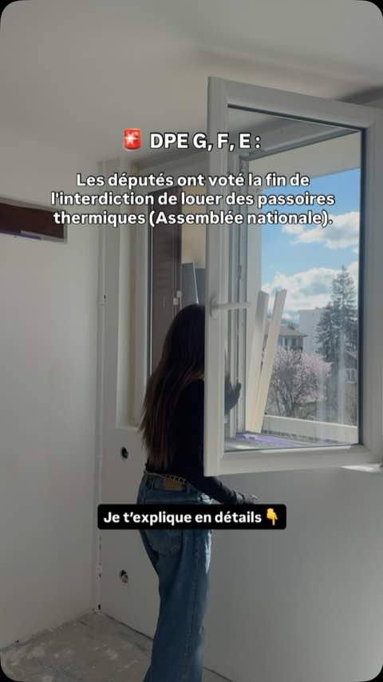
74 k vues
en 6 jours
+500 vues en 24 h
- 2,8 fois plus que d'habitude
- Engagement 0,1 % (63 commentaires)
- Publiée jeudi 19/11 à 12h00
- Durée 6 s
- @emelinesiron · Instagram · 87 k abonnés
Décryptage d'une actualité sur le DPE via un texte choc à l'écran et une explication complète en description.
- Le début (3 premières secondes)
- à l'écran : « 🚨 DPE G, F, E : Les députés ont voté la fin de l'interdiction de louer des passoires thermiques (Assemblée nationale). »
- Comment c'est construit
- Apparition du titre choc sur la loi DPE > Action de fond en vidéo (ouverture de fenêtre en rénovation) > Regard caméra et invitation à lire la légende
- Pourquoi ça marche
- L'actualité sur le DPE touche directement les propriétaires et locataires en provoquant un débat fort. La vidéo très courte tourne en boucle pendant que les spectateurs lisent la légende détaillée.
À ta sauce : Filmez-vous en train de mesurer une pièce pour un métrage Carrez avec un texte court annonçant un changement juridique majeur. Renvoyez ensuite les abonnés vers la légende pour tous les détails.
Script prêt à tourner plus bas : « L'IA des impôts traque vos travaux »
Voir la vidéo sur Instagram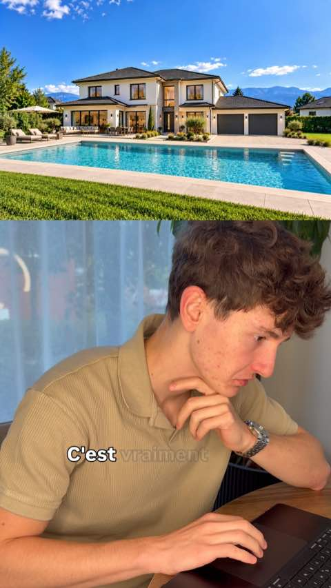
65 k vues
- 4,4 fois plus que d'habitude
- Engagement 7,7 % (5 k j'aime · 9 commentaires)
- Durée 42 s
- @lagenceimmo.fr · Instagram · 4 k abonnés
Un client décrit la maison de ses rêves qui prend forme en image jusqu'à ce qu'il annonce son budget modeste, réduisant le projet à une simple caravane.
- Le début (3 premières secondes)
- à l'écran : « On a un projet de construction » / dit : « On a un projet de construction »
- Comment c'est construit
- Exigences du client sur un terrain vide > Apparition progressive d'une villa de luxe avec piscine > Annonce de l'absence d'apport et du salaire > Transformation du projet en cabane puis en vieille caravane
- Pourquoi ça marche
- Le ressort repose sur l'humour et l'identification des agents immobiliers face aux attentes irréalistes de certains acheteurs. Le décalage visuel progressif entre le discours et la réalité du budget crée une chute très drôle.
À ta sauce : Filmer un agent qui décrit avec enthousiasme les équipements d'un bien d'exception face caméra. Terminer la vidéo en reculant le téléphone pour montrer qu'il se trouve dans un minuscule studio d'étudiant.
Voir la vidéo sur Instagram63 k vues
en 16 jours
+154 vues en 24 h
- 3,3 fois plus que d'habitude
- Engagement 0,4 % (269 j'aime · 12 commentaires)
- Publiée lundi 09/11 à 18h01
- Durée 15 s
- @lagenceimmo.fr · Instagram · 6 k abonnés
Un agent fait croire qu'un avion frôle le balcon avant de révéler un simple avion en papier publicitaire.
- Le début (3 premières secondes)
- à l'écran : « Je n'ai jamais vu un avion aussi bas »
- Comment c'est construit
- Un agent entend un bruit d'avion terrifiant sur son balcon > Il panique et s'enfuit en courant > La caméra pointe vers le ciel > Un avion en papier avec un message commercial apparaît
- Pourquoi ça marche
- Le son de réacteur d'avion intrigue immédiatement et crée une forte attente. Le décalage comique avec le petit avion en papier apporte une touche d'humour mémorable.
À ta sauce : Faire semblant de paniquer à cause d'un bruit d'hélicoptère avant de montrer le drone de l'agence en train de filmer une maison. Cela met en valeur la prestation de prise de vue aérienne avec humour.
Voir la vidéo sur Instagram60 k vues
en 16 jours
+25 vues en 24 h
- 2,2 fois plus que d'habitude
- Engagement 0,3 % (136 j'aime · 43 commentaires)
- Publiée lundi 09/11 à 18h00
- Durée 4 s
- @emelinesiron · Instagram · 87 k abonnés
Un tableau récapitulatif des impôts à payer sur un héritage de 200 000 € selon le statut familial.
- Le début (3 premières secondes)
- à l'écran : « Tu reçois 200 000€ d'héritage. Combien tu as d'impôts ? 🤔 »
- Comment c'est construit
- Question d'accroche financière > Affichage du tableau comparatif par statut > PS orientant vers la légende pour un cadeau
- Pourquoi ça marche
- Le sujet touche directement le portefeuille des gens et crée un choc visuel entre les 0 € du mariage et les 119 000 € du concubinage. Cela inciter à enregistrer et partager la vidéo à son partenaire.
À ta sauce : Pierre peut se filmer en train de tendre une clef devant la caméra avec un tableau comparatif du coût des frais de notaire selon le type de bien. Il invite ensuite sa communauté à réclamer son guide d'achat gratuit en commentaire.
Voir la vidéo sur Instagram55 k vues
en 7 jours
+619 vues en 24 h
- 3,0 fois plus que d'habitude
- Engagement 3,1 % (2 k j'aime · 30 commentaires)
- Publiée mercredi 18/11 à 17h49
- Durée 28 s
- @lagenceimmo.fr · Instagram · 6 k abonnés
Un agent immobilier fait une blague à son collègue en collant sur la vitrine une affiche annonçant la fermeture de l'agence pour la sortie de GTA VI.
- Le début (3 premières secondes)
- à l'écran : « J'ai collé l'affiche parfaite devant l'agence
Le patron hésite à me renvoyer 🤣 » / dit : « Mathéo, regarde le nouveau design que j'ai fait, la petite affiche que je vais coller devant l'agence. »
- Comment c'est construit
- Présentation du visuel sur l'écran d'ordinateur > Annonce surprise que l'affiche est déjà collée > Déplacement vers la porte d'entrée > Débat humoristique devant l'affiche collée sur la vitre
- Pourquoi ça marche
- La vidéo surfe sur la pop culture avec la référence très populaire au jeu vidéo GTA VI. Elle crée un sentiment de complicité et humanise l'équipe de l'agence grâce à un humour authentique.
À ta sauce : Pierre peut filmer une fausse pancarte affichée en agence disant qu'il offre un café à quiconque trouve une erreur dans une annonce. Il filme ensuite la réaction amusée d'un passant ou d'un collègue qui remarque l'affiche.
Voir la vidéo sur Instagram51 k vues
en 8 jours
+573 vues en 24 h
- 9,6 fois plus que d'habitude
- Engagement 0,3 % (128 j'aime · 16 commentaires)
- Publiée mardi 17/11 à 18h08
- Durée 58 s
- @geoffrey.delvaux · Instagram · 6 k abonnés
Un cambrioleur s'introduit dans une maison et se retrouve malgré lui guidé par un agent immobilier qui lui fait visiter le bien.
- Le début (3 premières secondes)
- à l'écran : « CAMBRIOLAGE BRAINE-LE-COMTE »
- Comment c'est construit
- Effraction simulée style caméra de surveillance > Accueil absurde par l'agent immobilier > Visite guidée des pièces et fouille des tiroirs > Poignée de main finale et départ du cambrioleur
- Pourquoi ça marche
- L'accroche intrigue grâce au faux fait divers et au style vidéo de surveillance. Le décalage absurde entre le cambrioleur cagoulé et la politesse de l'agent retient le spectateur tout en montrant le bien sous son meilleur jour.
À ta sauce : Simuler une fausse intrusion en se filmant soi-même cagoulé à la porte avant d'enchaîner sur une visite décalée. Un trépied et un téléphone suffisent pour reproduire cette situation comique et mettre en valeur un bien.
Script prêt à tourner plus bas : « La planque idéale à Namur »
Voir la vidéo sur Instagram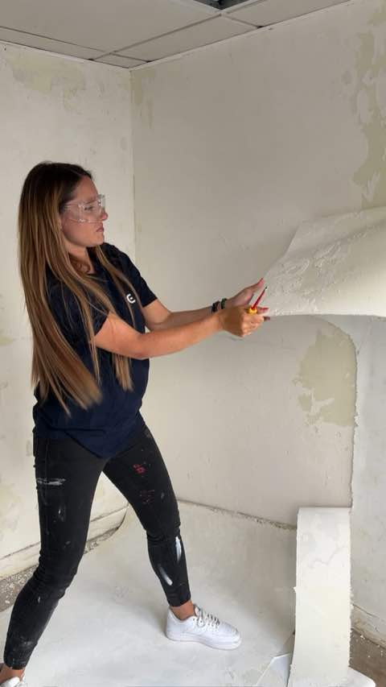
48 k vues
en 11 jours
+149 vues en 24 h
- 1,8 fois plus que d'habitude
- Engagement 1,1 % (499 j'aime · 14 commentaires)
- Publiée samedi 14/11 à 18h30
- Durée 11 s
- @emelinesiron · Instagram · 87 k abonnés
Le recit humoristique sous forme d'emploi du temps des galeres et allers-retours infinis au magasin de bricolage pendant des travaux.
- Le début (3 premières secondes)
- à l'écran : « À 9h, je pars à Leroy Merlin pour un rouleau de scotch. »
- Comment c'est construit
- Depart pour acheter du scotch > Accumulation d'erreurs et d'achats inutiles au fil de la journee > Boucle comique le lendemain matin
- Pourquoi ça marche
- Le ressort repose sur l'identification immediate de quiconque a deja fait des travaux de renovation. L'humour d'auto-derision incite tres fortement a commenter et partager son propre record d'allers-retours.
À ta sauce : Filmer un agent en train de preparer une mise en valeur de bien avec un texte chronologique humoristique sur les petites galeres de la journee. Pierre peut le tourner seul en posant son telephone sur trépied pendant qu'il installe de la deco.
Voir la vidéo sur Instagram41 k vues
en 14 jours
+227 vues en 24 h
- 1,5 fois plus que d'habitude
- Engagement 0,2 % (85 j'aime · 11 commentaires)
- Publiée mercredi 11/11 à 18h30
- Durée 5 s
- @emelinesiron · Instagram · 87 k abonnés
Une checklist dynamique listant les critères clés observés par les banques pour accorder un crédit immobilier.
- Le début (3 premières secondes)
- à l'écran : « CE QUE LA BANQUE REGARDE POUR TON CRÉDIT IMMOBILIER : »
- Comment c'est construit
- Affichage du titre principal > Déroulé des 7 critères avec des coches vertes > Message de conseil final en bas d'écran
- Pourquoi ça marche
- Le format checklist suscite le jeu et l'auto-évaluation immédiate chez le spectateur. La simplicité du visuel permet d'assimiler l'information clé très rapidement.
À ta sauce : Pierre se filme à son bureau avec une tasse de café et fait apparaître 5 erreurs fréquentes qui font rater une offre d'achat. Il invite ensuite les abonnés à enregistrer la vidéo pour leur prochaine visite.
Voir la vidéo sur Instagram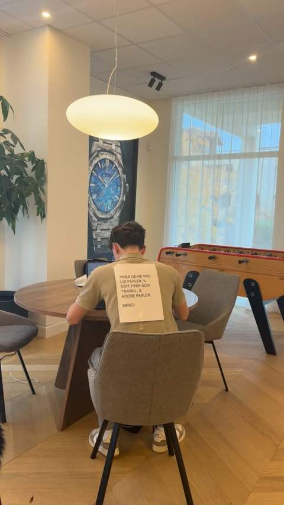
40 k vues
en 10 jours
+266 vues en 24 h
- 2,1 fois plus que d'habitude
- Engagement 1,2 % (459 j'aime · 7 commentaires)
- Publiée dimanche 15/11 à 17h40
- Durée 9 s
- @lagenceimmo.fr · Instagram · 6 k abonnés
Une pancarte scotchée dans le dos d'un agent immobilier prévient ses collègues de ne pas lui parler car il adore bavarder et doit avancer.
- Le début (3 premières secondes)
- à l'écran : « PRIER DE NE PAS LUI PARLER, IL DOIT FINIR SON TRAVAIL, IL ADORE PARLER. MERCI »
- Comment c'est construit
- Plan de dos montrant l'agent concentré et sa pancarte > La caméra tourne lentement autour de lui > L'agent s'aperçoit qu'on le regarde > Il abandonne tout de suite son ordinateur pour venir parler
- Pourquoi ça marche
- Cette vidéo joue sur l'humour d'identification au bureau et le stéréotype du collègue bavard que tout le monde connaît. Le texte écrit en gros sur la pancarte suscite immédiatement la curiosité du spectateur.
À ta sauce : Placer un panneau 'Ne pas déranger, dossier ultra confidentiel' devant la porte d'un bureau, puis ouvrir pour montrer l'agent en train d'organiser amoureusement ses stylos par couleur. C'est un gag très simple et rapide à tourner seul avec un smartphone.
Voir la vidéo sur Instagram
39 k vues
en 11 jours
+275 vues en 24 h
- 8,9 fois plus que d'habitude
- Engagement 0,4 % (132 j'aime · 7 commentaires)
- Publiée samedi 14/11 à 18h16
- Durée 38 s
- @carolinarthaud · Instagram · 96 k abonnés
Un jeu de questions-réponses rapide style Fast and Curious sur les choix de financement entre payer cash ou à crédit.
- Le début (3 premières secondes)
- à l'écran : « Cash ou Crédit ? » / dit : « Smartphone ? »
- Comment c'est construit
- Questions rapides sur les objets du quotidien > Questions sur le luxe et les loisirs > Réflexion sur l'achat de la résidence principale > Conclusion stratégique sur l'achat-revente à crédit
- Pourquoi ça marche
- Le format dynamique et rythmé maintient l'attention jusqu'au bout. Il stimule la curiosité en révélant la stratégie financière personnelle d'un investisseur.
À ta sauce : Pierre peut poser 5 questions rapides à un courtier local sur les dossiers de prêt immobiliers face caméra. C'est très simple à tourner seul avec un smartphone et très utile pour les acheteurs.
Voir la vidéo sur Instagram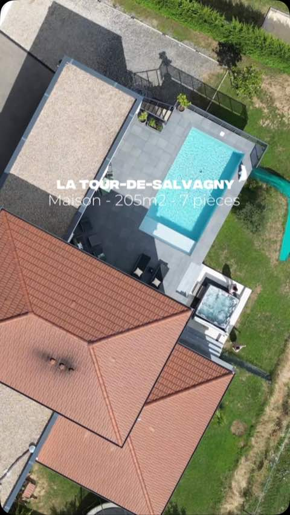
36 k vues
en 15 jours
+75 vues en 24 h
- 1,9 fois plus que d'habitude
- Engagement 1,7 % (599 j'aime · 1 commentaires)
- Publiée lundi 09/11 à 19h44
- Durée 30 s
- @sandra.viricel.immobilier · Instagram · 16 k abonnés
Présentation aérienne au drone d'une villa contemporaine d'exception avec piscine.
- Le début (3 premières secondes)
- à l'écran : « LA TOUR-DE-SALVAGNY Maison - 205m2 - 7 pièces »
- Comment c'est construit
- Vue plongeante au drone sur la piscine et le spa > Zoom sur la terrasse et la piscine > Recul progressif révélant toute la villa > Logo final de l'agence
- Pourquoi ça marche
- Les prises de vue aériennes au drone mettent en valeur le côté luxueux et font rêver. La qualité esthétique des images suscite immédiatement la curiosité et l'envie d'en savoir plus.
À ta sauce : Fais un plan séquence fluide au smartphone en partant de l'intérieur de la maison pour sortir directement sur la terrasse et la piscine. Ce mouvement immersif donne l'impression d'y être sans avoir besoin d'un drone.
Script prêt à tourner plus bas : « Le rooftop secret de Lyon Croix-Rousse »
Voir la vidéo sur Instagram34 k vues
en 3 jours
+10 k vues en 24 h
- 7,6 fois plus que d'habitude
- Engagement 0,0 % (1 commentaires)
- Publiée dimanche 22/11 à 17h09
- Durée 27 s
- @carolinarthaud · Instagram · 96 k abonnés
Un expert répond du tac au tac par 'J'investis' ou 'Je passe' à différents scénarios d'investissement immobilier.
- Le début (3 premières secondes)
- à l'écran : « J'investis ou j'investis pas ? » / dit : « Achat revente d'appartement ? »
- Comment c'est construit
- Question rapide sur l'achat revente d'appartement > Enchaînement de projets (division, locatif, Airbnb) avec réponses tranchées > Avis express sur les parkings et la rénovation > Conclusion affirmative sur l'immobilier de luxe
- Pourquoi ça marche
- Le format dynamique 'du tac au tac' suscite la curiosité et l'engagement immédiat. Les spectateurs aiment comparer leur propre stratégie aux avis tranchés d'un investisseur.
À ta sauce : Un agent immobilier répond en 2 secondes par 'J'achète' ou 'Je passe' sur différents quartiers ou types de biens de sa ville. C'est idéal pour susciter des débats locaux en commentaires tout en montrant sa connaissance du marché.
Script prêt à tourner plus bas : « Visite immo : j'achète ou je fuis ? »
Voir la vidéo sur Instagram30 k vues
en 11 jours
+191 vues en 24 h
- 1,6 fois plus que d'habitude
- Engagement 1,2 % (339 j'aime · 14 commentaires)
- Publiée samedi 14/11 à 17h46
- Durée 10 s
- @lagenceimmo.fr · Instagram · 6 k abonnés
L'agent et la directrice fixent des objectifs de production vidéo irréalistes au vidéaste qui réagit avec agacement.
- Le début (3 premières secondes)
- dit : « Alors moi je suis agent et je pense qu'aujourd'hui on peut faire au moins 10 vidéos. »
- Comment c'est construit
- L'agent propose de tourner 10 vidéos > La directrice monte l'objectif à 30 vidéos > Le vidéaste rejette la demande avec agacement
- Pourquoi ça marche
- Le contenu mise sur l'humour d'entreprise et l'effet de surprise de la dernière réplique. L'identification est forte pour tous ceux qui subissent des demandes irréalistes au travail.
À ta sauce : Pierre peut se filmer en train de jouer tour à tour le rôle du client exigeant et du conseiller immo. Cela montre avec humour la gestion des attentes lors d'une estimation.
Voir la vidéo sur Instagram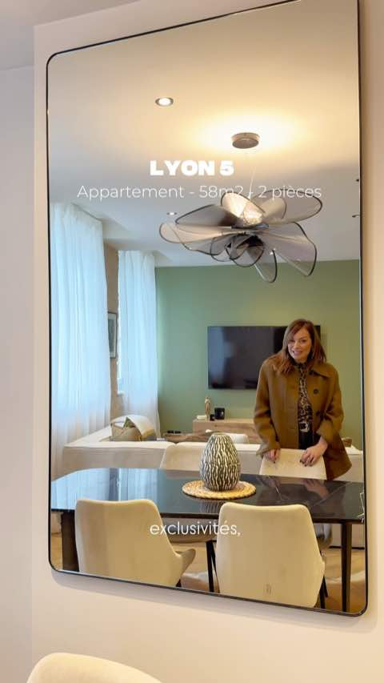
28 k vues
en 18 jours
+21 vues en 24 h
- 1,5 fois plus que d'habitude
- Engagement 0,9 % (259 j'aime · 3 commentaires)
- Publiée samedi 07/11 à 18h10
- Durée 48 s
- @sandra.viricel.immobilier · Instagram · 16 k abonnés
Une visite rythmée en musique d'un appartement rénové à Lyon 5 introduit par l'agente via un miroir.
- Le début (3 premières secondes)
- à l'écran : « LYON 5 Appartement - 58m² / 2 pièces » / dit : « Aujourd'hui on vous présente une de nos dernières exclusivités »
- Comment c'est construit
- Intro face miroir par l'agente > Visite du séjour et de la cuisine > Chambre, dressing et vue extérieure > Salle d'eau et plan final avec logo
- Pourquoi ça marche
- L'accroche originale à travers le miroir suscite la curiosité dès les premières secondes. La mise en scène soignée et la musique entraînante valorisent le bien rénové et créent un coup de cœur.
À ta sauce : Tourner une intro face miroir dans un bel appartement pour créer un cadrage original tout seul. Enchaîner ensuite avec des plans en mouvement sur les détails de décoration les plus vendeurs.
Voir la vidéo sur Instagram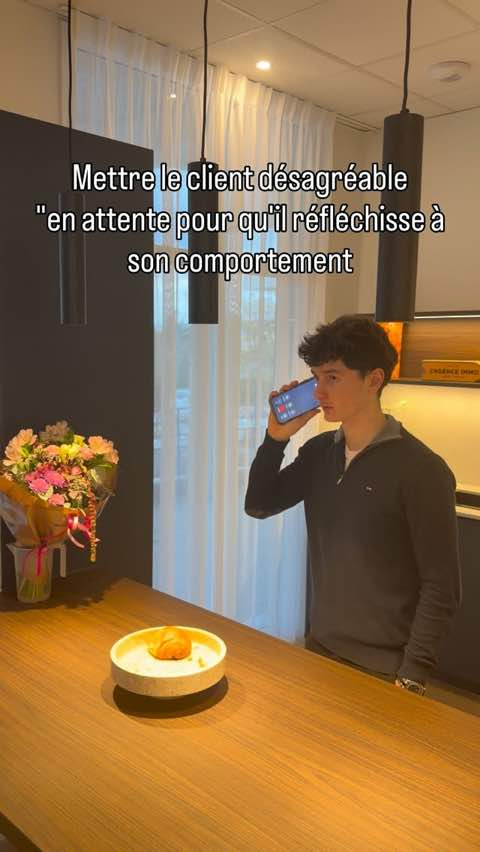
22 k vues
- Engagement 1,6 % (348 j'aime · 8 commentaires)
- Durée 11 s
- @lagenceimmo.fr · Instagram · 6 k abonnés
Un agent immobilier met un client désagréable en attente au téléphone pour manger tranquillement son croissant.
- Le début (3 premières secondes)
- à l'écran : « Mettre le client désagréable "en attente pour qu'il réfléchisse à son comportement »
- Comment c'est construit
- L'agent met le téléphone en attente > Il prend un croissant dans l'assiette > Il mange et danse joyeusement > Il s'éloigne en profitant de sa pause
- Pourquoi ça marche
- Le sketch joue sur l'identification des personnes qui travaillent avec du public et affrontent des clients impolis. Le contraste entre l'urgence au téléphone et la décontraction totale de l'agent crée l'humour.
À ta sauce : Se filmer en train de mettre un client difficile en attente pour prendre le temps de se faire un café calmement. Une vidéo très simple à réaliser seul en posant son téléphone sur le bureau.
Voir la vidéo sur Instagram21 k vues
en 17 jours
+198 vues en 24 h
- Engagement 1,2 % (249 j'aime · 0 commentaires)
- Publiée dimanche 08/11 à 17h47
- Durée 5 s
- @lagenceimmo.fr · Instagram · 6 k abonnés
Un clin d'oeil humoristique qui crée de la complicité avec l'utilisateur en train de regarder des Reels au bureau sans le son.
- Le début (3 premières secondes)
- à l'écran : « T'inquiète frérot, moi aussi je suis en train de regarder des reels sans le son au bureau »
- Comment c'est construit
- Regard concentré face caméra > Lecture du texte à l'écran > Sourire et geste complice de la main
- Pourquoi ça marche
- La vidéo mise sur un sentiment puissant d'identification et de connivence avec le spectateur. Le format très court incite à la relecture et au partage rapide entre collègues.
À ta sauce : Se filmer au bureau avec un air très concentré et ajouter le texte : Quand tu fais semblant de travailler dur mais que tu attends la signature du compromis. C'sest ultra simple à tourner soi-même avec son smartphone.
Voir la vidéo sur Instagram16 k vues
en 17 jours
+11 vues en 24 h
- 3,0 fois plus que d'habitude
- Engagement 0,5 % (65 j'aime · 7 commentaires)
- Publiée dimanche 08/11 à 12h14
- Durée 83 s
- @geoffrey.delvaux · Instagram · 6 k abonnés
Un vlog dynamique qui retrace heure par heure la journée type d'un agent immobilier, du réveil jusqu'à la fin de la journée.
- Le début (3 premières secondes)
- à l'écran : « JOURNEE D'UN AGENT IMMOBILIER 7H00 » / dit : « 24 heures dans ma vie d'agent immobilier. »
- Comment c'est construit
- Routine matinale et départ > Travail au bureau et réunions d'équipe > Déjeuner et rendez-vous d'évaluation > Shooting photo et administratif > Visite finale et fin de journée
- Pourquoi ça marche
- Le format vlog suscite la curiosité et l'identification en montrant la réalité du métier de manière rythmée et humaine. L'incrustation horaire crée un fil conducteur dynamique qui maintient l'attention.
À ta sauce : Filmer une version locale 'Ma journée d'agent à [Nom de ville]' en 60 secondes avec l'heure affichée à l'écran. Il suffit d'enchaîner des plans selfie courts entre les trajets, la prépa des dossiers, un café et une visite.
Script prêt à tourner plus bas : « 3 heures pour transformer une pièce avant un shooting »
Voir la vidéo sur Instagram16 k vues
en 3 jours
+224 vues en 24 h
- 3,0 fois plus que d'habitude
- Engagement 0,7 % (97 j'aime · 10 commentaires)
- Publiée dimanche 22/11 à 14h41
- Durée 26 s
- @geoffrey.delvaux · Instagram · 6 k abonnés
Un agent immobilier estime en direct le prix de la maison d'un personnage du jeu vidéo GTA 6.
- Le début (3 premières secondes)
- à l'écran : « MISSION COMBIEN VAUT LA MAISON DE JASON ? » / dit : « Après cette maison, si je devais vraiment l'évaluer aujourd'hui, la maison de Jason de GTA 6... »
- Comment c'est construit
- Présentation du bien virtuel > Analyse des critères (emplacement, état) > Estimation du prix > Explication du contexte du marché immobilier américain
- Pourquoi ça marche
- Elle utilise l'engouement géant autour de la sortie de GTA 6 pour rendre l'expertise immobilière ludique. Le croisement entre pop culture et immobilier suscite la curiosité immédiate.
À ta sauce : Prends un extrait d'une série ou d'un film très connu et estime le prix de l'appartement du héros en voix off. C'est très facile à faire seul avec un simple montage sur téléphone.
Script prêt à tourner plus bas : « Combien vaut la maison de d'Harry Potter ? »
Voir la vidéo sur Instagram16 k vues
en 11 heures
- 3,5 fois plus que d'habitude
- Engagement 0,7 % (112 j'aime · 2 commentaires)
- Publiée mardi 24/11 à 19h36
- Durée 10 s
- @carolinarthaud · Instagram · 96 k abonnés
Un homme fait des squats dans sa salle de sport privée en utilisant sa compagne comme poids humain.
- Le début (3 premières secondes)
- pas de texte ni de phrase au début
- Comment c'est construit
- Mise en place de l'homme face au miroir > La femme monte sur ses épaules > Enchaînement de squats en se filmant dans le miroir
- Pourquoi ça marche
- Le côté ludique et complice du couple apporte une touche d'humour très engageante. Le cadre d'une salle de gym privée haut de gamme suscite aussi l'aspiration et la curiosité.
À ta sauce : Pierre peut tester les équipements d'une maison d'exception de manière décalée pour faire découvrir les prestations. Cela permet de présenter un espace de vie ou une option luxe avec sympathie et légèreté.
Script prêt à tourner plus bas : « Le test de l'îlot géant »
Voir la vidéo sur Instagram15 k vues
en 6 jours
+379 vues en 24 h
- 3,4 fois plus que d'habitude
- Engagement 0,0 % (7 commentaires)
- Publiée jeudi 19/11 à 18h29
- Durée 24 s
- @carolinarthaud · Instagram · 96 k abonnés
Une intervenante donne une méthode chiffrée concrète pour passer à l'action en investissement immobilier lors d'une session de formation.
- Le début (3 premières secondes)
- à l'écran : « Pas de moment parfait Passez à l'action 10 visites, 5 offres par mois » / dit : « Si vous attendez de toujours en savoir plus pour passer à l'action, il y a pas de moment parfait »
- Comment c'est construit
- Rappel sur le piège de l'attente > Règle chiffrée concrète (10 visites, 5 offres, 1 acceptée) > Promesse de résultat garanti à 6 mois
- Pourquoi ça marche
- L'intervenante brise la paralysie de la réflexion en proposant une méthode chiffrée et accessible. Le format capté sur le vif lors d'une conférence renforce la crédibilité et l'aspect coaching.
À ta sauce : Pierre peut se filmer face caméra pour donner la règle d'or d'un achat réussi dans son secteur en 3 chiffres clés (ex: 3 quartiers à cibler, 5 critères à vérifier, 1 offre max). L'ajout de cases à cocher à l'écran rend la vidéo captivante et très pédagogique.
Voir la vidéo sur Instagram12 k vues
en 13 jours
+70 vues en 24 h
- 1,5 fois plus que d'habitude
- Engagement 5,4 % (573 j'aime · 68 commentaires)
- Publiée jeudi 12/11 à 18h26
- Durée 122 s
- @century21 · Instagram · 96 k abonnés
Le PDG de Century 21 réagit en direct aux vidéos TikTok et Instagram les plus amusantes de ses agents.
- Le début (3 premières secondes)
- dit : « All right everybody, so our Century 21 marketing team hand-picked some of the amazing social posts... »
- Comment c'est construit
- Introduction du PDG qui annonce la session réaction > Succession de 6 extraits de vidéos d'agents avec commentaires en direct > Conclusion chaleureuse du PDG et appel à mentionner la marque
- Pourquoi ça marche
- Ce format réaction met en valeur les collaborateurs du réseau tout en apportant de la convivialité. Il renforce l'esprit d'équipe et divertit le public grâce à l'humour spontané du dirigeant.
À ta sauce : Filmez le responsable de votre agence locale en train de réagir aux pires clichés de visite ou aux meilleures anecdotes de vos négociateurs. C'est très simple à tourner au smartphone et cela rend votre agence immédiatement accessible et humaine.
Voir la vidéo sur Instagram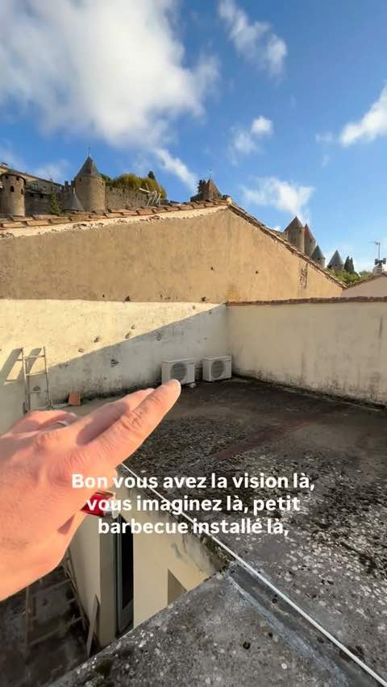
12 k vues
en 20 jours
+15 vues en 24 h
- 2,1 fois plus que d'habitude
- Engagement 0,8 % (86 j'aime · 6 commentaires)
- Publiée jeudi 05/11 à 16h11
- Durée 25 s
- @club_immobilier · Instagram · 64 k abonnés
Visite humoristique d'une terrasse brute mettant en valeur une vue spectaculaire sur un monument historique.
- Le début (3 premières secondes)
- à l'écran : « Bon vous avez la vision là, vous imaginez là, petit barbecue installé là, » / dit : « Bon vous avez la vision là, vous imaginez là »
- Comment c'est construit
- Projection du potentiel d'aménagement > Révélation de la vue imprenable sur le château > Panoramique du décor > Chute réaliste et humoristique
- Pourquoi ça marche
- Le contraste fort entre le toit brut et la vue incroyable sur le château crée un effet waouh immédiat. Le ton spontané et l'autodérision finale apportent une touche de sympathie très efficace.
À ta sauce : Filmer un toit ou un balcon à rénover en décrivant un projet d'aménagement idéal, avant de révéler un panorama remarquable de votre ville. Conclure avec un mot d'esprit sur un détail insolite du lieu.
Voir la vidéo sur Instagram11 k vues
en 12 jours
+15 vues en 24 h
- 2,1 fois plus que d'habitude
- Engagement 0,1 % (10 commentaires)
- Publiée jeudi 12/11 à 18h49
- Durée 43 s
- @geoffrey.delvaux · Instagram · 6 k abonnés
Un agent montre les endroits cachés à vérifier absolument en visite au lieu de se focaliser sur la cuisine.
- Le début (3 premières secondes)
- dit : « En visite, les gens ils passent la majorité de leur temps dans la cuisine »
- Comment c'est construit
- Constat sur la fausse priorité de la cuisine > Inspection des vices dans la cave > Vérification de la charpente au grenier > Contrôle du tableau électrique > Appel à l'action pour recevoir la checklist
- Pourquoi ça marche
- La vidéo joue sur la peur des vices cachés et des gros frais imprévus après un achat. Elle apporte une valeur concrète immédiate tout en incitant fortement aux commentaires.
À ta sauce : Pierre peut se filmer en montrant trois détails techniques souvent négligés lors d'une visite d'appartement comme les joints de fenêtres ou les évacuations d'eau. Il termine en proposant d'envoyer son guide d'inspection gratuit à quiconque commente le mot VERIF.
Voir la vidéo sur Instagram10 k vues
en 11 jours
+116 vues en 24 h
- 2,2 fois plus que d'habitude
- Engagement 0,0 % (0 commentaires)
- Publiée vendredi 13/11 à 19h43
- Durée 23 s
- @carolinarthaud · Instagram · 96 k abonnés
Un résumé dynamique en musique d'une journée de visite de deux projets immobiliers sur le terrain avec une communauté d'investisseurs.
- Le début (3 premières secondes)
- à l'écran : « Journée visites avec les membres 2 projets à Bordeaux »
- Comment c'est construit
- Arrivée du groupe et immersion > Visite du premier projet à Léognan > Visite du second projet à Martillac > Échanges informels entre membres > Conclusion avec texte de fin
- Pourquoi ça marche
- Ce format dynamise l'image de la marque en montrant de la vraie présence sur le terrain. La musique entraînante et l'aspect de groupe créent un sentiment d'appartenance et de preuve sociale.
À ta sauce : Pierre peut se filmer une journée complète en enchaînant des micro-séquences de ses rendez-vous vendeurs et estimations. Il ajoute une musique rythmée pour montrer l'activité intense et le sérieux de son agence locale.
Script prêt à tourner plus bas : « Marathon 3 pépites à la Croix-Rousse »
Voir la vidéo sur Instagram7 k vues
en 9 jours
+75 vues en 24 h
- 1,7 fois plus que d'habitude
- Engagement 0,1 % (9 commentaires)
- Publiée lundi 16/11 à 17h42
- Durée 58 s
- @carolinarthaud · Instagram · 96 k abonnés
Un récapitulatif dynamique et immersif d'une journée de formation et de réseautage immobilier à Bordeaux.
- Le début (3 premières secondes)
- à l'écran : « Une journée avec nous Bordeaux ouverte aux non-membres » / dit : « Vous allez rencontrer une formidable famille »
- Comment c'est construit
- Accueil des participants et petit-déjeuner convivial > Extraits de la formation et des interventions théoriques > Ateliers pratiques et échanges entre professionnels > Conclusion inspirante sur l'esprit d'équipe et logo final
- Pourquoi ça marche
- La vidéo mise sur le sentiment d'appartenance à un groupe et la preuve sociale. Voir des professionnels échanger dans une ambiance chaleureuse donne envie d'intégrer l'événement.
À ta sauce : Pierre peut filmer un petit-déjeuner d'accueil organisé à l'agence pour des acheteurs ou partenaires locaux. En alternant les plans de sourires, de poignées de main et de café, il montre la proximité et la convivialité de son équipe.
Voir la vidéo sur InstagramÉcrits à partir des vidéos qui ont le mieux marché : même mécanique, autre sujet, pensés pour une agence. Ouvre, lis, tourne. Remplace les noms de lieux et les prix par ceux de ton agence.
Coulisses d'une vente VIP ~38 s
Moule repris de la vidéo de @safti_france (870 k vues). La revoir
Début (0-3 s). Image : Gros plan rapide sur des coupes de champagne puis panoramique vif sur un penthouse bondé à Lyon
Dit : « 18 heures à Lyon, 40 invités VIP et un penthouse vendu avant le dessert. »
Écran : Coulisses d'une soirée immo VIP
| 3-10 s | L'équipe d'agents qui règle le son du DJ et allume les guirlandes sur une terrasse de 120 m2
Dit : « Une fois par mois, l'agence privatise un bien d'exception pour une visite immersive. »
Écran : 120m2 privatises ce soir |
| 10-20 s | Montage ultra dynamique : tintement de verres, rires, clients qui admirent le coucher de soleil
Dit : « Fini les visites tristes. Ici, les acheteurs testent la vue, la lumière et l'ambiance du quartier. »
Écran : Vendre un bien autrement |
| 20-28 s | Un agent immobilier montre discrètement une offre d'achat signée sur une table basse
Dit : « Résultat : trois offres au prix déposées directement pendant le cocktail. »
Écran : 3 offres reçues en 2h |
| 28-35 s | Toute l'équipe de l'agence réunie qui trinque face caméra avec de grands sourires
Dit : « L'énergie du réseau fait toute la différence pour concrétiser vos projets. »
Écran : L'équipe Immo Lyon |
Chute : Apparition du logo animé de l'agence sur fond blanc avec le texte : L'immobilier ne se visite plus, il se vit.
Pour finir, tu dis : « Envoie cette vidéo à la personne avec qui tu veux fêter ton prochain déménagement ! »
Légende : Infiltration dans nos soirées ventes privées à Lyon. Abonne-toi pour ne pas rater le prochain bien d'exception !
Peindre ses murs quand on est locataire ~37 s
Moule repris de la vidéo de @seloger (679 k vues). La revoir
Début (0-3 s). Image : Pierre face caméra dans un salon, un pinceau à la main devant un mur bleu canard
Dit : « Votre propriétaire a-t-il le droit de vous interdire de peindre les murs de votre logement ? »
Écran : PEINDRE EN LOCATION : VOS DROITS
| 3-10 s | Pierre montre des nuanciers de peinture face caméra
Dit : « Beaucoup de locataires pensent qu'il faut obligatoirement tout repeindre en blanc avant de rendre les clés. »
Écran : Le blanc est-il obligatoire ? |
| 10-20 s | Pierre montre le texte de loi sur l'écran de son téléphone
Dit : « C'est faux. L'article 6 de la loi de 1989 vous autorise à décorer votre logement. Peindre un mur en vert, en bleu ou en terracotta est un simple aménagement. Pas besoin d'autorisation. »
Écran : Loi du 6 juillet 1989 |
| 20-30 s | Pierre compare un nuancier couleur terracotta et un échantillon noir mat
Dit : « Seule exception : les couleurs vraiment excentriques comme le noir total ou le rouge vif qui empêcheraient de relouer le bien. »
Écran : Attention aux couleurs excentriques |
| 30-37 s | Pierre pose son pinceau et croise les bras dans la pièce décorée
Dit : « Si vos choix restent sobres, le bailleur ne peut pas retenir un seul euro sur votre caution de 800 euros. »
Écran : Dépôt de garantie protégé |
Chute : Pierre fait un geste vers l'écran. Dit : Abonne-toi pour connaître tous tes droits de locataire !
Pour finir, tu dis : « Envoie cette vidéo à un ami locataire qui n'ose pas personnaliser sa déco ! »
Légende : Peindre ses murs en location : que dit la loi ? Partage ce conseil à un proche locataire !
Le pari des croissants ~40 s
Moule repris de la vidéo de @lagenceimmo.fr (678 k vues). La revoir
Début (0-3 s). Image : Plan séquence en marchant derrière l'agent qui frappe à la porte vitrée de la gérante
Dit : « Sophie ? Petite question rapide. »
Écran : On a demandé à la patronne combien de likes pour les croissants
| 3-12 s | L'agent entre, s'appuie sur le bureau, la gérante lève à peine les yeux de son écran
Dit : « Si la vidéo fait beaucoup de likes, tu offres les croissants à toute la rue samedi ? » |
| 12-22 s | Elle retire ses lunettes, se recule dans son fauteuil, sourire en coin
Dit : « Toute la rue ? Il y a 40 commerces dans cette rue. »
Écran : 40 commerces |
| 22-32 s | Négociation en champ contrechamp rapide au téléphone, l'agent mime le chiffre avec les doigts
Dit : « Allez, dis un chiffre. » |
| 32-38 s | Elle tend la main, poignée de main en gros plan
Dit : « 15 000. Et c'est toi qui te lèves à 6 heures. »
Écran : 15 000 likes |
Chute : L'agent se retourne vers la caméra, l'air beaucoup moins sûr de lui : « 6 heures ? »
Pour finir, tu dis : « Envoie-la au voisin de l'agence, il est concerné. »
Légende : Le pari est lancé. Si on y arrive, rendez-vous samedi devant l'agence.
Le compromis à relire ~16 s
Moule repris de la vidéo de @lagenceimmo.fr (533 k vues). La revoir
Début (0-3 s). Image : Gros plan sur la gérante qui passe la tête par la porte de son bureau
Dit : « Thomas ? Viens, il faut qu'on parle du compromis. »
Écran : Quand la patronne a relu ton compromis
| 3-8 s | Thomas se lève lentement, attrape son café comme une bouée, la suit dans le couloir |
| 8-12 s | Elle entre dans son bureau et s'assoit
Dit : « Ferme la porte, s'il te plaît. » |
| 12-15 s | Thomas ferme la porte en restant dans le couloir, se retourne vers la caméra et repart sur la pointe des pieds |
Chute : Plan large : la poignée de la porte tourne derrière lui, il accélère le pas.
Pour finir, tu dis : « Identifie le collègue qui ferait exactement ça. »
Légende : Techniquement, il a fermé la porte.
Le réseau introuvable ~5 s
Moule repris de la vidéo de @geoffrey.delvaux (462 k vues). La revoir
Début (0-3 s). Image : Quelqu'un debout sur le lit d'une chambre vide, téléphone tendu au plafond
Dit : « »
Écran : Ce qu'on regrette APRÈS le notaire (personne ne vérifie le 3e)
| 0-5 s | Plan séquence unique : il tourne sur lui-même, monte sur la pointe des pieds, la barre de réseau reste vide à l'écran
Écran : 1 barre. Parfois. |
Chute : Il pose le téléphone sur le rebord de la fenêtre et s'éloigne de la pièce, résigné.
Pour finir, tu dis : « Enregistre-la pour ta prochaine visite. »
Légende : 5 choses à tester en visite que personne ne teste : 1. Le réseau dans chaque chambre. 2. La pression de la douche à l'étage. 3. Les portes qui tapent dans un radiateur. 4. Le bruit à 18 h, pas à 11 h. 5. L'ouverture complète des fenêtres. Tu en ajoutes une ?
Combien de m² pour 200 000 € dans le 44 ? ~35 s
Moule repris de la vidéo de @pap.fr (432 k vues). La revoir
Début (0-3 s). Image : Tableau synthétique affiché en surimpression sur fond vidéo de la Place Royale à Nantes.
Dit : « Voici ce que vous achetez vraiment avec 200 000 euros selon votre ville. »
Écran : 200 000 € : combien de m² ?
| 3-10 s | Mise en surbrillance de la ligne Nantes Centre sur le tableau comparatif.
Dit : « À Nantes centre, avec 200 000 euros, vous obtenez 51 mètres carrés en moyenne. »
Écran : Nantes Centre : 51 m² |
| 10-20 s | Défilement du tableau vers Rezé et Saint-Herblain sur fond de tramway en mouvement.
Dit : « À dix minutes de tramway, à Rezé, le même budget vous offre 64 mètres carrés. À Saint-Herblain, vous montez à 72 mètres carrés. »
Écran : Rezé : 64 m² | St-Herblain : 72 m² |
| 20-30 s | Zoom sur la ligne Clisson avec un paysage de la vallée en arrière-plan.
Dit : « À 25 minutes de train, du côté de Clisson, vous atteignez 88 mètres carrés avec un extérieur. »
Écran : Clisson : 88 m² + Jardin |
Chute : Maintien du tableau récapitulatif complet. Dit : 37 mètres carrés d'écart pour 25 minutes de trajet.
Pour finir, tu dis : « Abonnez-vous pour suivre l'immobilier local et envoyez cette vidéo à un ami qui cherche à acheter. »
Légende : Combien de m² pour votre budget dans le secteur ? Analyse comparative en Loire-Atlantique.
Les 5 erreurs en visite ~7 s
Moule repris de la vidéo de @geoffrey.delvaux (332 k vues). La revoir
Début (0-3 s). Image : Traversée lente d'un beau séjour lumineux, téléphone stabilisé à hauteur de poitrine
Dit : « »
Écran : 5 erreurs qu'un agent ne fait JAMAIS en visitant
| 0-4 s | On avance vers la baie vitrée
Écran : 5 erreurs qu'un agent ne fait JAMAIS en visitant |
| 4-7 s | On arrive face à la vue
Écran : La 4e coûte le plus cher |
Chute : Le plan se fige sur la vue, la vidéo reboucle sur l'entrée du séjour.
Pour finir, tu dis : « Envoie-la à la personne qui visite ce week-end. »
Légende : 1. Visiter une seule fois, et toujours en journée. 2. Ne pas demander le montant des charges. 3. Oublier de regarder le tableau électrique. 4. Ne pas lire les 3 derniers PV d'assemblée générale. 5. Tomber amoureux de la déco au lieu des murs.
Inondation de café au bistrot ~35 s
Moule repris de la vidéo de @seloger (305 k vues). La revoir
Début (0-3 s). Image : Le café d'un serveur déborde largement de la tasse et inonde la table en terrasse, mais Pierre ne bouge pas d'un millimètre.
Dit : « Un T3 avec terrasse rue Gambetta vient de tomber sous les trois cent mille euros. »
Écran : SON CAFÉ DÉBORDE MAIS IL S'EN FOUT
| 0-5 s | Le serveur continue de verser du café à côté de la tasse sur la table. Pierre reste figé, les yeux rivés sur son téléphone.
Écran : SON CAFÉ DÉBORDE MAIS IL S'EN FOUT |
| 5-12 s | Gros plan sur l'écran du téléphone avec la fiche d'un appartement lumineux et une grande terrasse.
Dit : « Soixante-quinze mètres carrés, dernier étage, plein sud. »
Écran : T3 75 M² RUE GAMBETTA |
| 12-20 s | Le serveur essuie la table en panique avec des serviettes. Pierre decale doucement sa main sans quitter l'écran des yeux.
Dit : « Dans le secteur Gambetta, ce genre de bien part en moins de vingt-quatre heures. » |
| 20-28 s | Le café coule sur son jean. Pierre appuie sereinement sur le bouton appeler de la fiche agence.
Dit : « Avis aux amateurs, les affaires prioritaires passent avant le reste. » |
Chute : Pierre met le téléphone à son oreille au milieu des serviettes trempées et dit : Bonjour, je réserve le premier créneau de visite ce matin.
Pour finir, tu dis : « Envoie cette vidéo à ton pote qui cherche un appartement et abonne-toi pour ne rater aucun bien sur le secteur. »
Légende : Quand la bonne affaire tombe au mauvais moment, la priorité reste la même. Nos nouveautés sont disponibles chaque semaine.
Ce qui change au 1er janvier ~7 s
Moule repris de la vidéo de @emelinesiron (276 k vues). La revoir
Début (0-3 s). Image : Panoramique lent sur un appartement loué en meublé, cuisine puis salon
Dit : « »
Écran : Au 1er janvier, ça change pour les propriétaires qui louent
| 0-3 s | Panoramique sur la cuisine
Écran : Au 1er janvier, ça change pour les propriétaires qui louent |
| 3-7 s | Panoramique sur le salon
Écran : 2 règles que peu de bailleurs connaissent. Détails en légende |
Chute : Le plan se termine sur une fenêtre ouverte, la vidéo reboucle.
Pour finir, tu dis : « Envoie-la à un proche qui loue un logement. »
Légende : À adapter avec une vraie règle en vigueur et sa date exacte (diagnostic énergétique, encadrement des loyers, location courte durée dans la ville). Citer la source officielle en fin de légende.
La vue d'abord ~30 s
Moule repris de la vidéo de @sandra.viricel.immobilier (271 k vues). La revoir
Début (0-3 s). Image : Fenêtre qui s'ouvre sur la place ou le parc le plus connu de la ville, lumière de fin de journée
Dit : « »
Écran : 4 pièces face à [lieu connu de la ville]
| 3-10 s | Recul lent depuis la fenêtre dans le séjour, on découvre la hauteur sous plafond
Écran : 92 m² · 3e étage avec ascenseur |
| 10-20 s | Coupes de 2 s : moulures, parquet, cuisine, chambre principale |
| 20-28 s | Retour sur le balcon, l'agent pose les clés sur la rambarde
Écran : Prix et visite : lien en bio |
Chute : Dernier plan sur la vue, logo de l'agence discret en bas.
Pour finir, tu dis : « Enregistre-la si tu cherches dans le quartier. »
Légende : Le genre de vue qu'on ne trouve qu'une fois par an dans ce quartier. Visites cette semaine.
Balcon ou pièce en plus ? ~40 s
Moule repris de la vidéo de @bienici (256 k vues). La revoir
Début (0-3 s). Image : Passante qui répond du tac au tac, micro-cravate visible, rue commerçante
Dit : « Un balcon, évidemment ! »
Écran : Balcon ou pièce en plus ?
| 3-20 s | 6 réponses rapides de passants, une coupe par réponse
Dit : « Une pièce en plus, j'ai deux enfants. / Le balcon, pour le café du matin. »
Écran : Balcon : 4 / Pièce : 2 |
| 20-30 s | L'agent face caméra devant la vitrine
Dit : « Et si vous n'aviez pas à choisir ? » |
| 30-40 s | Bascule sur un appartement de l'agence : la pièce en plus, puis le balcon
Dit : « Trois pièces, et un balcon de 8 mètres carrés. »
Écran : 3 pièces + balcon 8 m² |
Chute : Plan sur le balcon avec un café posé, comme dans la réponse de la passante.
Pour finir, tu dis : « Dis en commentaire : balcon ou pièce en plus ? »
Légende : Le débat dans la rue. Et vous, vous choisissez quoi ?
L'arnaque au virement avant visite ~38 s
Moule repris de la vidéo de @sandra_viricel (235 k vues). La revoir
Début (0-3 s). Image : L'agent face caméra devant la vitrine de l'agence, ton grave, plan serré
Dit : « Si on vous demande un virement avant même la visite, arrêtez tout. »
Écran : Arnaque en cours à [ville]
| 4-18 s | Face caméra, il montre sur son téléphone une fausse annonce floutée
Dit : « En ce moment, de fausses annonces de location copient les photos de vrais appartements, avec un loyer trop beau. On vous demande un dépôt pour réserver la visite. »
Écran : Loyer trop bas = alerte |
| 18-32 s | Gros plan sur une carte professionnelle posée sur le bureau
Dit : « Deux réflexes : demandez le numéro de carte professionnelle de l'agent, et appelez l'agence sur le numéro trouvé vous-même, pas celui de l'annonce. »
Écran : Carte pro + appel à l'agence |
Chute : Retour face caméra : « Une vraie agence ne vous demandera jamais d'argent avant une visite. »
Pour finir, tu dis : « Envoie-la à quelqu'un qui cherche un appart en ce moment. »
Légende : Fausses annonces de location : 2 réflexes avant de verser quoi que ce soit.
Taxe foncière : le comparatif local ~38 s
Moule repris de la vidéo de @pap.fr (221 k vues). La revoir
Début (0-3 s). Image : Plan serré sur Pierre tenant une feuille d'impôt floutée devant un panneau de commune.
Dit : « Voici la vraie taxe foncière moyenne payée cette année dans quatre villes de la métropole. »
Écran : Taxe foncière : le vrai comparatif
| 3-12 s | Pierre marche en ville, un tableau comparatif synthétique s'affiche à côté de lui.
Dit : « Pour un trois pièces classique de soixante-dix mètres carrés, on commence à Mérignac. La moyenne tourne autour de neuf cent cinquante euros. »
Écran : Mérignac : 950 € / an |
| 12-21 s | Changement de décor devant un parc, la deuxième ligne du tableau se remplit.
Dit : « À Talence, la note grimpe vite. On dépasse les mille cent euros par an pour la même surface. »
Écran : Talence : 1 120 € / an |
| 21-30 s | Pierre pointe le téléphone vers une rue résidentielle, les deux dernières lignes apparaissent.
Dit : « Du côté de Pessac, comptez mille cinquante euros. Et à Bègles, la bonne surprise, on reste sous la barre des neuf cents euros. »
Écran : Pessac : 1 050 € | Bègles : 890 € |
| 30-36 s | Plan moyen sur Pierre qui regarde le tableau récapitulatif complet.
Dit : « Résultat, plus de deux cents euros d'écart par an pour exactement la même superficie. »
Écran : Jusqu'à 230 € d'écart |
Chute : Fondu sur le tableau de synthèse complet et coupure nette de la musique.
Pour finir, tu dis : « Envoie cette vidéo à un ami qui cherche à acheter dans le secteur. »
Légende : Combien vous payez dans votre commune ? Le récapitulatif complet de la métropole en un coup d'œil.
Le pari du patron tenu ~38 s
Moule repris de la vidéo de @lagenceimmo.fr (206 k vues). La revoir
Début (0-3 s). Image : Un agent immobilier tout sourire montre une clé, pendant que le patron en costume pose avec un seau et une éponge à côté d'une voiture.
Dit : « 48 heures pour vendre le T3 de la rue Thiers, c'est fait, maintenant place à la punition. »
Écran : Le patron a perdu son pari
| 3-10 s | Le patron regarde le dossier de vente, interloqué, une éponge remplie de mousse à la main.
Dit : « Tu as vraiment signé le compromis ce matin sans aucune baisse de prix ? »
Écran : Compromis signé à 10h |
| 10-18 s | L'agent tape doucement sur le dossier marqué VENDU posé sur le capot.
Dit : « Deux visites hier après-midi, deux offres au prix. Les chiffres parlent Marc. »
Écran : 2 visites, 2 offres au prix |
| 18-28 s | Le patron commence à nettoyer le pare-brise en grimaçant, l'agent boit son café à côté.
Dit : « D'accord, mais pour le prochain mandat exclusif, si tu mets plus de 3 jours, c'est toi qui nettoies mon garage ! »
Écran : Nouveau défi lancé |
| 28-35 s | Le patron rince la portière et fait un signe de la main vers la caméra.
Dit : « Dans cette agence, on tient nos promesses avec nos clients et avec l'équipe. »
Écran : Parole tenue chez nous |
Chute : Le patron tend la chiffonnette à l'agent et dit : par contre la finition des rétroviseurs, tu la fais toi-même !
Pour finir, tu dis : « Envoie cette vidéo à un collègue qui te doit toujours un pari ! »
Légende : Quand un appartement part en 48h au prix, le patron tient ses engagements jusqu'au coup d'éponge. Abonne-toi pour ne rien rater !
Le piège de la pression d'eau en visite ~35 s
Moule repris de la vidéo de @geoffrey.delvaux (160 k vues). La revoir
Début (0-3 s). Image : Pierre entre brutalement dans une salle de bain et allume le robinet du lavabo.
Dit : « Tester le pommeau de douche en visite, tout le monde le fait. Mais ouvrir le lavabo en même temps, personne n'y pense. »
Écran : L'ERREUR TRÈS CHÈRE EN VISITE
| 3-12 s | Pierre tourne le robinet du lavabo puis bascule le mitigeur de la douche. Le débit chute instantanément.
Dit : « Regardez ce débit qui s'effondre. Canalisation entartrée ou ballon d'eau sous-dimensionné. »
Écran : Chute de pression immédiate |
| 12-22 s | Pierre ouvre le placard du chauffe-eau et pointe du doigt l'étiquette technique.
Dit : « Un ballon de 50 litres pour un T3, c'est l'eau froide assurée à la deuxième douche. Comptez 2 500 euros pour tout remettre aux normes. »
Écran : 2 500 € de frais cachés |
| 22-30 s | Pierre s'approche du téléphone, pointe le bas de l'écran vers la description et sort du cadre.
Dit : « La liste des 4 vérifications invisibles à faire dans chaque pièce est écrite juste en dessous. »
Écran : La suite dans la description 👇 |
Chute : Pierre sort totalement du champ, laissant l'image fixe sur le robinet qui coule doucement.
Pour finir, tu dis : « Envoie cette vidéo à un ami qui cherche un appartement pour lui éviter cette mauvaise surprise. »
Légende : 4 tests rapides à faire durant votre visite : 1. Pression d'eau simultanée 2. État du tableau électrique 3. Humidité sous l'évier 4. Fermeture des fenêtres.
200 000 € : quelle surface autour de Nantes ? ~40 s
Moule repris de la vidéo de @pap.fr (119 k vues). La revoir
Début (0-3 s). Image : Pierre debout devant une carte interactive de la métropole avec un graphique synthétique d'ouverture
Dit : « Voici exactement ce que vaut un budget de 200 000 euros dans 4 communes autour de Nantes. »
Écran : 200 000 € : quelle surface autour de Nantes ?
| 3-11 s | Plan court sur le centre-ville de Nantes avec le chiffre 43 m2 incrusté en grand
Dit : « À Nantes centre, 200 000 euros c'est un logement de 43 mètres carrés. »
Écran : Nantes Centre : 43 m² |
| 11-19 s | Plan dynamique sur Rezé avec badge visuel +15 m2
Dit : « À Rezé, juste à côté, vous passez tout de suite à 58 mètres carrés avec un balcon. »
Écran : Rezé : 58 m² (+ balcon) |
| 19-28 s | Plan comparatif côte à côte montrant des quartiers d'Orvault et Carquefou
Dit : « À Orvault, on grimpe à 67 mètres carrés. Et à Carquefou, c'est 72 mètres carrés avec un jardin. »
Écran : Orvault : 67 m² | Carquefou : 72 m² |
| 28-36 s | Grand tableau récapitulatif clair qui s'affiche au centre avec le récap des 4 villes et surfaces
Dit : « En 10 minutes de voiture, vous gagnez presque 30 mètres carrés pour le même budget. »
Écran : TABLEAU COMPARATIF METROPOLE |
Chute : Le tableau récapitulatif reste affiché en fixe sur fond d'image locale avec la phrase : En 10 minutes de route, la surface varie du simple au double.
Pour finir, tu dis : « Partage cette vidéo à un ami qui cherche à acheter dans le secteur et abonne-toi pour suivre le marché local. »
Légende : Combien de m² pour 200 000 € autour de Nantes ? Le comparatif complet commune par commune.
Traduction des annonces immo ~35 s
Moule repris de la vidéo de @emelinesiron (91 k vues). La revoir
Début (0-3 s). Image : Pierre regarde son téléphone portable avec un air sceptique devant une vitrine d'agence immobilière.
Dit : « Ce que veulent vraiment dire les annonces immobilières. »
Écran : Traduction des annonces immobilières
| 3-12 s | Pierre mime un verre à la main en grimaçant à cause du bruit.
Dit : « Quartier très vivant, ça veut dire deux bars de nuit sous la fenêtre de ta chambre. »
Écran : Quartier vivant = Bruit jusqu'à 4h |
| 12-21 s | Pierre se tient les bras collés au corps comme s'il était coincé.
Dit : « Cuisine cosy, ça veut dire impossible d'ouvrir le frigo et le lave-vaisselle en même temps. »
Écran : Cuisine cosy = 2 mètres carrés |
| 21-30 s | Pierre fait une tête choquée en regardant une feuille de papier.
Dit : « Prévoir un petit rafraîchissement, prévois plutôt 45 000 euros de budget travaux. »
Écran : Rafraîchissement = 45 000€ de travaux |
Chute : Pierre range son téléphone dans sa poche et pointe du doigt l'écran avec un sourire.
Pour finir, tu dis : « Envoie cette vidéo à un ami qui cherche un logement en ce moment. »
Légende : Le vrai décodeur des annonces immo. À conserver impérativement avant vos prochaines visites !
Le retour surprise du Prêt à Taux Zéro ~37 s
Moule repris de la vidéo de @pap.fr (88 k vues). La revoir
Début (0-3 s). Image : Pierre s'approche rapidement de la caméra, smartphone en main, l'air totalement abasourdi devant la vitrine d'une agence immobilière.
Dit : « Alerte générale ! Énorme retournement de situation pour tous ceux qui veulent acheter leur logement cette année ! »
Écran : Prêt à 0% : la surprise !
| 3-12 s | Pierre montre l'écran de son téléphone qui affiche un article d'actualité économique.
Dit : « Bercy vient de trancher. Le Prêt à Taux Zéro est officiellement réélargi à toutes les communes de France pour les appartements neufs. »
Écran : PTZ élargi à toute la France |
| 12-23 s | Plan serré sur une grille de calculatrice financière tenue en main.
Dit : « Concrètement, vous pouvez emprunter jusqu'à 100 000 euros à zéro pour cent d'intérêt. C'est jusqu'à 50 % de votre projet financé sans payer un centime de crédit dessus. »
Écran : Jusqu'à 100 000 € sans intérêt |
| 23-32 s | Pierre s'arrête net, lève le doigt pour nuancer l'information.
Dit : « Mais attention au piège. Si les plafonds de revenus ont augmenté, les maisons individuelles neuves restent totalement exclues du dispositif. »
Écran : Maisons neuves toujours exclues |
Chute : Si vous avez un projet d'achat cette année, c'est le moment de refaire vos calculs.
Pour finir, tu dis : « Partagez cette vidéo à un ami qui cherche à acheter et abonnez-vous pour suivre l'actu immo ! »
Légende : Énorme changement pour le Prêt à Taux Zéro ! Découvrez si vous êtes concerné pour votre projet d'achat.
L'IA des impôts traque vos travaux ~35 s
Moule repris de la vidéo de @emelinesiron (71 k vues). La revoir
Début (0-3 s). Image : Pierre debout dans un jardin devant une véranda récente, téléphone en main
Dit : « Les impôts utilisent désormais les satellites et l'IA pour recalculer votre taxe foncière. »
Écran : 🚨 Impôts : l'IA traque vos travaux
| 3-12 s | Pierre marche vers un cabanon de jardin neuf
Dit : « Le dispositif Foncier Innovant a déjà généré 50 millions d'euros de redressements sur les piscines. »
Écran : +50 millions d'euros réclamés |
| 12-22 s | Gros plan sur une mesure au mètre ruban le long d'une extension
Dit : « Désormais, la détection automatique cible aussi les abris de jardin, pergolas et vérandas. »
Écran : Vérandas et abris ciblés |
| 22-30 s | Pierre regarde fixement la caméra et pointe le bas de l'écran
Dit : « La liste complète des constructions concernées et la démarche pour régulariser sont ci-dessous. »
Écran : Explications complètes en description 👇 |
Chute : Pierre quitte le champ par la droite en continuant de désigner la description du doigt.
Pour finir, tu dis : « Envoie cette vidéo à un propriétaire qui a fait des travaux récemment. »
Légende : L'I.A. du fisc repère désormais toutes les extensions non déclarées. Les règles et la méthode pour régulariser sans amende sont ci-dessous.
Combien de m² pour 200 000 € autour de Tours ? ~42 s
Moule repris de la vidéo de @pap.fr (71 k vues). La revoir
Début (0-3 s). Image : Pierre montre l'écran de son téléphone affichant un graphique vide devant la place Jean-Jaurès à Tours
Dit : « Combien de mètres carrés vous achetez vraiment avec 200 000 euros autour de Tours ? »
Écran : 200 000 € : quelle surface autour de Tours ?
| 3-11 s | Tableau graphique animé qui monte avec un fond vidéo discret du centre-ville de Tours
Dit : « On commence au cœur de la ville, à Tours centre. Pour ce budget, vous obtenez en moyenne 44 mètres carrés, soit un T2 classique. »
Écran : Tours Centre : 44 m² |
| 11-19 s | Le tableau met à jour la deuxième ligne avec un fond vidéo des bords de Loire à Saint-Cyr
Dit : « À 5 minutes de là, juste de l'autre côté du pont, Saint-Cyr-sur-Loire. Le compteur monte à 49 mètres carrés pour la même somme. »
Écran : Saint-Cyr : 49 m² |
| 19-27 s | Le tableau s'enrichit d'une troisième ligne avec un fond vidéo du centre de La Riche
Dit : « À La Riche, l'écart se creuse. Vos 200 000 euros vous offrent 62 mètres carrés, l'équivalent d'un grand T3. »
Écran : La Riche : 62 m² |
| 27-35 s | La ligne du haut s'affiche en brillant avec un fond vidéo du parc de Joué-lès-Tours
Dit : « Et la grande gagnante du secteur, c'est Joué-lès-Tours. Vous grimpez directement à 71 mètres carrés, soit un T4 familial. »
Écran : Joué-lès-Tours : 71 m² |
Chute : Tableau récapitulatif complet affiché en plein écran. Pierre dit : '27 mètres carrés d'écart en seulement 10 minutes de tramway.'
Pour finir, tu dis : « Partage cette vidéo à quelqu'un qui cherche à acheter dans le secteur et abonne-toi pour le prochain comparatif. »
Légende : 200 000 € en poche : où achetez-vous le plus grand autour de Tours ? Le comparatif complet des surfaces du marché local.
La planque idéale à Namur ~42 s
Moule repris de la vidéo de @geoffrey.delvaux (47 k vues). La revoir
Début (0-3 s). Image : Vue style caméra de surveillance tremblante, un homme en capuche avec un gros sac de sport s'engouffre dans un appartement.
Dit : « 300 000 euros en liquide et zéro endroit où se planquer à Namur. »
Écran : AVIS DE RECHERCHE A NAMUR
| 3-12 s | L'homme ferme la porte en panique. L'agent immobilier apparaît en costume et vérifie la serrure tranquillement.
Dit : « Porte blindée cinq points. Vos poursuivants vont bien galérer. »
Écran : Porte haute sécurité A2P |
| 12-22 s | L'agent ouvre un immense dressing intégré. Le fugitif s'y glisse dedans pour tester, l'agent referme la porte.
Dit : « Dressing sur-mesure de quatre mètres cubes. Isolation acoustique totale. »
Écran : Insonorisation garantie |
| 22-32 s | Sur le balcon, l'agent tend des jumelles au fugitif qui surveille la rue du troisième étage.
Dit : « Balcon plein sud. Vous voyez débarquer les gyrophares à deux kilomètres. »
Écran : Vue panoramique à 180° |
Chute : Dans le salon, le fugitif pose le sac de sport plein de billets aux pieds de l'agent et s'installe dans le canapé avec un café. Il dit : Je prends le bien. Gardez la monnaie.
Pour finir, tu dis : « Envoie cette vidéo au pote qui cherche désespérément une planque au calme ! »
Légende : Même sans sac de billets, cet appartement de 85 m² vous attend à Namur. Contactez-nous pour visiter !
Le rooftop secret de Lyon Croix-Rousse ~38 s
Moule repris de la vidéo de @sandra.viricel.immobilier (36 k vues). La revoir
Début (0-3 s). Image : Plan fluide en montée verticale depuis le salon vers la baie vitrée révélant les toits de la ville
Dit : « Une terrasse suspendue au-dessus des toits de Lyon, ça ressemble à ça. »
Écran : LYON CROIX-ROUSSE Loft - 140m2 - Rooftop
| 3-10 s | Avancée lente vers l'escalier en acier noir qui mène à la verrière du toit
Dit : « Bienvenue dans ce duplex de 140 mètres carrés dissimulé au dernier étage. »
Écran : 140 m² au dernier étage |
| 10-18 s | Ouverture de la baie vitrée sur la terrasse plein sud avec vue panoramique
Dit : « Dehors, quarante-cinq mètres carrés de terrasse en teck sans aucun vis-à-vis. »
Écran : Terrasse plein sud 45 m² |
| 18-26 s | Plan large sur le séjour baigné de lumière avec 5 mètres de hauteur sous plafond
Dit : « À l'intérieur, un séjour cathédrale et trois suites privatives. »
Écran : 3 suites privatives |
| 26-34 s | Recul progressif sur la terrasse avec le soleil qui se couche sur la ville
Dit : « Le genre d'endroit où le café du matin a une tout autre allure. »
Écran : Vue à 360 degrés |
Chute : Logo de l'agence sur fond sombre. Dit : Tous les détails de ce bien rare sont en bio.
Pour finir, tu dis : « Envoie cette vidéo à la personne avec qui tu aimerais boire un verre sur ce toit ! »
Légende : Le secret le mieux gardé de la Croix-Rousse 🌆 Abonne-toi pour visiter les plus beaux biens de la région !
Visite immo : j'achète ou je fuis ? ~38 s
Moule repris de la vidéo de @carolinarthaud (21 k vues). La revoir
Début (0-3 s). Image : L'agent immobilier se tient devant l'entrée d'une maison, regard caméra, téléphone à la main.
Dit : « Une fissure sur le mur pendant une visite, on valide ? »
Écran : Visite immo : j'achète ou je fuis ?
| 3-10 s | L'agent pointe du doigt une fissure fine en diagonale sur un mur extérieur.
Dit : « Fissure en escalier sur la brique ? Je fuis, problème de fondation. »
Écran : Fissures structurelles : JE FUIS |
| 10-18 s | L'agent entre dans une cuisine des années 80 en chêne vernis.
Dit : « Cuisine rustique de 1982 ? J'achète, deux pots de peinture et c'est réglé. »
Écran : Déco vieillotte : J'ACHÈTE |
| 18-25 s | L'agent montre un vieux tableau électrique en bois à fusibles.
Dit : « Tableau à fusibles de 1970 ? J'achète, mais je retire trois mille euros sur l'offre. »
Écran : Électricité à refaire : JE NÉGOCIE |
| 25-32 s | L'agent regarde une tache d'humidité sombre au plafond d'une chambre sous toit.
Dit : « Moisissure au plafond sous les combles ? Je fuis tout de suite. »
Écran : Infiltration toiture : JE FUIS |
Chute : L'agent montre un dossier DPE classé G sur une tablette : 'Une passoire thermique en plein centre-ville ? J'achète direct, c'est là qu'on fait la meilleure plus-value.'
Pour finir, tu dis : « Partage la vidéo à ton pote qui visite des appartements et abonne-toi. »
Légende : Repérer les pièges en visite peut te sauver des milliers d'euros. Transmets cette vidéo à un ami qui cherche son bien !
3 heures pour transformer une pièce avant un shooting ~38 s
Moule repris de la vidéo de @geoffrey.delvaux (16 k vues). La revoir
Début (0-3 s). Image : L'agent entre dans un salon sombre et un peu désordonné, déclencheur de chrono en main.
Dit : « Trois heures chrono pour transformer ce salon avant les photos. »
Écran : OBJECTIF : PHOTOS PARFAITES EN 3H
| 3-11 s | Incrustation '10H00'. L'agent range les affaires personnelles dans un carton neutre et ouvre grand les rideaux.
Dit : « 10h00. On désencombre tout. Moins d'objets persos, plus de volume visible. »
Écran : 10H00 : DÉSENCOMBRER |
| 11-20 s | Incrustation '11H15'. L'agent replace le canapé, tape dans un coussin et pose un plaid écru avec une plante verte.
Dit : « 11h15. On capte la lumière naturelle et on ajoute trois touches déco stratégiques. »
Écran : 11H15 : MISE EN SCÈNE |
| 20-28 s | Incrustation '12H30'. L'agent installe son trépied dans le coin le plus large de la pièce.
Dit : « 12h30. Place aux photos. Un angle bas fait toute la différence. »
Écran : 12H30 : LE SHOOTING |
| 28-35 s | Incrustation '12H58'. Le chrono affiche 2h58m. Écran coupé en deux : avant sombre / après lumineux.
Dit : « 12h58. Pari tenu. L'annonce sort ce soir à 18h. »
Écran : 12H58 : RÉSULTAT FINAL |
Chute : L'agent éteint les lumières avec le sourire en montrant le rendu sur son téléphone : Voilà comment booster les visites avant même la première prise de contact.
Pour finir, tu dis : « Envoie cette vidéo à un ami qui veut vendre sa maison et abonne-toi pour plus d'astuces ! »
Légende : 3 heures de préparation peuvent totalement changer le destin d'une annonce immobilière. Vous préférez la version avant ou après ?
Le test de l'îlot géant ~38 s
Moule repris de la vidéo de @carolinarthaud (16 k vues). La revoir
Début (0-3 s). Image : Deux agents immo assis aux deux extrémités opposées d'un immense îlot en marbre, se criant presque dessus.
Dit : « Voilà ce qui arrive quand un architecte veut la plus grande cuisine de Nantes ! »
Écran : Un îlot de 4 mètres de long !
| 3-12 s | Un agent fait glisser une tasse de café le long du marbre comme une pierre de curling jusqu'à l'autre agent.
Dit : « Premier test : la passe du café. Quatre mètres de marbre brut en un seul bloc. »
Écran : Test 1 : Glissage de café |
| 12-22 s | Plan accéléré sur l'ouverture rapide des tiroirs invisibles intégrés sous l'îlot.
Dit : « Côté rangements, douze tiroirs XXL à pression. On y entre toute la vaisselle d'un régiment. »
Écran : 12 tiroirs invisibles |
| 22-30 s | Les deux agents alignent 8 tabourets de bar de haut standing tout le long sans manquer d'espace.
Dit : « Capacité d'accueil : huit places assises pour le petit-déjeuner, sans jamais se toucher les coudes. »
Écran : 8 vraies places |
Chute : Les deux agents essaient de se faire un high-five au-dessus du plan de travail, mais leurs bras sont trop courts d'un mètre. Ils éclatent de rire face caméra.
Pour finir, tu dis : « Envoie cette vidéo à la personne qui passe sa vie en cuisine et abonne-toi ! »
Légende : Quand la cuisine devient plus grande que mon premier studio. 📍 Maison d'architecte, quartier Procé.
Combien vaut la maison de d'Harry Potter ? ~38 s
Moule repris de la vidéo de @geoffrey.delvaux (15 k vues). La revoir
Début (0-3 s). Image : Un agent immobilier pointe l'écran de sa tablette affichant la photo du 4 Privet Drive
Dit : « Si la famille Dursley vendait le 4 Privet Drive aujourd'hui en banlieue proche de Londres... »
Écran : ESTIMATION : MAISON DES DURSLEY HARRY POTTER
| 3-12 s | Plan de la façade de la maison avec incrustation d'une fiche technique fictive
Dit : « On est sur un pavillon des années 80 dans le Surrey. Quatre chambres, garage attenant, jardin parfaitement tondu. »
Écran : Surrey, Angleterre • 110 m² |
| 12-22 s | L'agent fait un zoom sur le placard sous l'escalier avec un mètre ruban
Dit : « Le gros point fort, c'est le placard sous l'escalier. Dans le marché actuel à Londres, ça se loue facilement 600 livres par mois comme micro studio. »
Écran : Placard sous l'escalier : rentable ? |
| 22-32 s | L'agent montre des comparables de prix immobiliers réels dans la même rue anglaise
Dit : « Dans ce secteur très recherché, la maison vaut actuellement 550 000 livres Sterling, soit environ 640 000 euros. »
Écran : Prix estimé : 640 000 € |
Chute : L'agent ferme son dossier en secouant la tête : Seul problème au diagnostic : une isolation phonique zéro et un squat permanent de hiboux dans la cheminée.
Pour finir, tu dis : « Envoie cette vidéo au pote qui attend toujours sa lettre de Poudlard pour payer son loyer ! »
Légende : Même les Dursley auraient fait une sacrée plus-value en 2024. Abonne-toi pour découvrir la valeur des maisons de la pop culture !
Marathon 3 pépites à la Croix-Rousse ~38 s
Moule repris de la vidéo de @carolinarthaud (10 k vues). La revoir
Début (0-3 s). Image : Pierre marche rapidement vers la caméra, café à la main, montre 8h30 sur son téléphone
Dit : « Trois appartements secrets dénichés avant midi à la Croix-Rousse. »
Écran : 3 pépites dénichées ce matin
| 3-10 s | Traversée rapide d'une traboule puis caméra subjective qui entre dans un appartement lumineux
Dit : « Premier arrêt : 65 mètres carrés sous plafond, poutres apparentes et vue sur les toits. »
Écran : Stop 1 : Canut avec vue |
| 10-18 s | Gros plan sur le télémètre laser qui affiche 30 m², suivi d'un panoramique sur une terrasse ensoleillée
Dit : « Deuxième adresse : un rez-de-jardin introuvable sur le secteur avec trente mètres carrés d'extérieur. »
Écran : Stop 2 : Jardin secret |
| 18-27 s | Pierre monte un escalier en pierre puis ouvre la porte d'un grand espace brut
Dit : « Dernière visite : un plateau de 90 mètres carrés entièrement à repenser pour un investisseur. »
Écran : Stop 3 : Plateau à rénover |
| 27-35 s | Retour à l'agence, Pierre pose 3 trousseaux de clés sur le bureau et ferme son ordinateur
Dit : « Trois dossiers bouclés avant le déjeuner. Les photos professionnelles partent au montage. »
Écran : Retour agence : 12h15 |
Chute : Plan d'ensemble de la vitrine de l'agence. Dit : La recherche du bien idéal continue cet après-midi.
Pour finir, tu dis : « Partage cette vidéo à un ami qui cherche à acheter à Lyon ! »
Légende : 3 visites, 3 styles, 1 seule matinée. Abonne-toi pour découvrir les pépites du quartier avant tout le monde.
Triés par vues habituelles du compte (ce que fait une vidéo normale chez lui). Vidéos par semaine = moyenne des 4 dernières semaines.